<!DOCTYPE html>
<html lang="ja" class="js svg background-fixed"><head>
<meta http-equiv="content-type" content="text/html; charset=UTF-8">
<meta charset="UTF-8">
<meta name="viewport" content="width=device-width, initial-scale=1">
<link rel="profile" href="https://gmpg.org/xfn/11">

<script>(function(html){html.className = html.className.replace(/\bno-js\b/,'js')})(document.documentElement);</script>
<title>第7章 ベーシックインカムが実現したあとの社会 – ベーシックインカムを実現する方法</title>
<meta name="robots" content="max-image-preview:large">
<link rel="dns-prefetch" href="https://cdn.jsdelivr.net/">
<link rel="alternate" type="application/rss+xml" title="ベーシックインカムを実現する方法 » フィード" href="https://basicincom.com/feed/">
<link rel="alternate" type="application/rss+xml" title="ベーシックインカムを実現する方法 » コメントフィード" href="https://basicincom.com/comments/feed/">
<link rel="alternate" type="application/rss+xml" title="ベーシックインカムを実現する方法 » 第7章 ベーシックインカムが実現したあとの社会 のコメントのフィード" href="https://basicincom.com/ch7/feed/">
<script>
window._wpemojiSettings = {"baseUrl":"https:\/\/s.w.org\/images\/core\/emoji\/14.0.0\/72x72\/","ext":".png","svgUrl":"https:\/\/s.w.org\/images\/core\/emoji\/14.0.0\/svg\/","svgExt":".svg","source":{"concatemoji":"https:\/\/basicincom.com\/wp-includes\/js\/wp-emoji-release.min.js?ver=6.3.1"}};
/*! This file is auto-generated */
!function(i,n){var o,s,e;function c(e){try{var t={supportTests:e,timestamp:(new Date).valueOf()};sessionStorage.setItem(o,JSON.stringify(t))}catch(e){}}function p(e,t,n){e.clearRect(0,0,e.canvas.width,e.canvas.height),e.fillText(t,0,0);var t=new Uint32Array(e.getImageData(0,0,e.canvas.width,e.canvas.height).data),r=(e.clearRect(0,0,e.canvas.width,e.canvas.height),e.fillText(n,0,0),new Uint32Array(e.getImageData(0,0,e.canvas.width,e.canvas.height).data));return t.every(function(e,t){return e===r[t]})}function u(e,t,n){switch(t){case"flag":return n(e,"\ud83c\udff3\ufe0f\u200d\u26a7\ufe0f","\ud83c\udff3\ufe0f\u200b\u26a7\ufe0f")?!1:!n(e,"\ud83c\uddfa\ud83c\uddf3","\ud83c\uddfa\u200b\ud83c\uddf3")&&!n(e,"\ud83c\udff4\udb40\udc67\udb40\udc62\udb40\udc65\udb40\udc6e\udb40\udc67\udb40\udc7f","\ud83c\udff4\u200b\udb40\udc67\u200b\udb40\udc62\u200b\udb40\udc65\u200b\udb40\udc6e\u200b\udb40\udc67\u200b\udb40\udc7f");case"emoji":return!n(e,"\ud83e\udef1\ud83c\udffb\u200d\ud83e\udef2\ud83c\udfff","\ud83e\udef1\ud83c\udffb\u200b\ud83e\udef2\ud83c\udfff")}return!1}function f(e,t,n){var r="undefined"!=typeof WorkerGlobalScope&&self instanceof WorkerGlobalScope?new OffscreenCanvas(300,150):i.createElement("canvas"),a=r.getContext("2d",{willReadFrequently:!0}),o=(a.textBaseline="top",a.font="600 32px Arial",{});return e.forEach(function(e){o[e]=t(a,e,n)}),o}function t(e){var t=i.createElement("script");t.src=e,t.defer=!0,i.head.appendChild(t)}"undefined"!=typeof Promise&&(o="wpEmojiSettingsSupports",s=["flag","emoji"],n.supports={everything:!0,everythingExceptFlag:!0},e=new Promise(function(e){i.addEventListener("DOMContentLoaded",e,{once:!0})}),new Promise(function(t){var n=function(){try{var e=JSON.parse(sessionStorage.getItem(o));if("object"==typeof e&&"number"==typeof e.timestamp&&(new Date).valueOf()<e.timestamp+604800&&"object"==typeof e.supportTests)return e.supportTests}catch(e){}return null}();if(!n){if("undefined"!=typeof Worker&&"undefined"!=typeof OffscreenCanvas&&"undefined"!=typeof URL&&URL.createObjectURL&&"undefined"!=typeof Blob)try{var e="postMessage("+f.toString()+"("+[JSON.stringify(s),u.toString(),p.toString()].join(",")+"));",r=new Blob([e],{type:"text/javascript"}),a=new Worker(URL.createObjectURL(r),{name:"wpTestEmojiSupports"});return void(a.onmessage=function(e){c(n=e.data),a.terminate(),t(n)})}catch(e){}c(n=f(s,u,p))}t(n)}).then(function(e){for(var t in e)n.supports[t]=e[t],n.supports.everything=n.supports.everything&&n.supports[t],"flag"!==t&&(n.supports.everythingExceptFlag=n.supports.everythingExceptFlag&&n.supports[t]);n.supports.everythingExceptFlag=n.supports.everythingExceptFlag&&!n.supports.flag,n.DOMReady=!1,n.readyCallback=function(){n.DOMReady=!0}}).then(function(){return e}).then(function(){var e;n.supports.everything||(n.readyCallback(),(e=n.source||{}).concatemoji?t(e.concatemoji):e.wpemoji&&e.twemoji&&(t(e.twemoji),t(e.wpemoji)))}))}((window,document),window._wpemojiSettings);
</script>
<style>
img.wp-smiley,
img.emoji {
	display: inline !important;
	border: none !important;
	box-shadow: none !important;
	height: 1em !important;
	width: 1em !important;
	margin: 0 0.07em !important;
	vertical-align: -0.1em !important;
	background: none !important;
	padding: 0 !important;
}
</style>
	<link rel="stylesheet" id="wp-block-library-css" href="chapter_7_files/style.min.css" media="all">
<style id="wp-block-library-theme-inline-css">
.wp-block-audio figcaption{color:#555;font-size:13px;text-align:center}.is-dark-theme .wp-block-audio figcaption{color:hsla(0,0%,100%,.65)}.wp-block-audio{margin:0 0 1em}.wp-block-code{border:1px solid #ccc;border-radius:4px;font-family:Menlo,Consolas,monaco,monospace;padding:.8em 1em}.wp-block-embed figcaption{color:#555;font-size:13px;text-align:center}.is-dark-theme .wp-block-embed figcaption{color:hsla(0,0%,100%,.65)}.wp-block-embed{margin:0 0 1em}.blocks-gallery-caption{color:#555;font-size:13px;text-align:center}.is-dark-theme .blocks-gallery-caption{color:hsla(0,0%,100%,.65)}.wp-block-image figcaption{color:#555;font-size:13px;text-align:center}.is-dark-theme .wp-block-image figcaption{color:hsla(0,0%,100%,.65)}.wp-block-image{margin:0 0 1em}.wp-block-pullquote{border-bottom:4px solid;border-top:4px solid;color:currentColor;margin-bottom:1.75em}.wp-block-pullquote cite,.wp-block-pullquote footer,.wp-block-pullquote__citation{color:currentColor;font-size:.8125em;font-style:normal;text-transform:uppercase}.wp-block-quote{border-left:.25em solid;margin:0 0 1.75em;padding-left:1em}.wp-block-quote cite,.wp-block-quote footer{color:currentColor;font-size:.8125em;font-style:normal;position:relative}.wp-block-quote.has-text-align-right{border-left:none;border-right:.25em solid;padding-left:0;padding-right:1em}.wp-block-quote.has-text-align-center{border:none;padding-left:0}.wp-block-quote.is-large,.wp-block-quote.is-style-large,.wp-block-quote.is-style-plain{border:none}.wp-block-search .wp-block-search__label{font-weight:700}.wp-block-search__button{border:1px solid #ccc;padding:.375em .625em}:where(.wp-block-group.has-background){padding:1.25em 2.375em}.wp-block-separator.has-css-opacity{opacity:.4}.wp-block-separator{border:none;border-bottom:2px solid;margin-left:auto;margin-right:auto}.wp-block-separator.has-alpha-channel-opacity{opacity:1}.wp-block-separator:not(.is-style-wide):not(.is-style-dots){width:100px}.wp-block-separator.has-background:not(.is-style-dots){border-bottom:none;height:1px}.wp-block-separator.has-background:not(.is-style-wide):not(.is-style-dots){height:2px}.wp-block-table{margin:0 0 1em}.wp-block-table td,.wp-block-table th{word-break:normal}.wp-block-table figcaption{color:#555;font-size:13px;text-align:center}.is-dark-theme .wp-block-table figcaption{color:hsla(0,0%,100%,.65)}.wp-block-video figcaption{color:#555;font-size:13px;text-align:center}.is-dark-theme .wp-block-video figcaption{color:hsla(0,0%,100%,.65)}.wp-block-video{margin:0 0 1em}.wp-block-template-part.has-background{margin-bottom:0;margin-top:0;padding:1.25em 2.375em}
</style>
<style id="classic-theme-styles-inline-css">
/*! This file is auto-generated */
.wp-block-button__link{color:#fff;background-color:#32373c;border-radius:9999px;box-shadow:none;text-decoration:none;padding:calc(.667em + 2px) calc(1.333em + 2px);font-size:1.125em}.wp-block-file__button{background:#32373c;color:#fff;text-decoration:none}
</style>
<style id="global-styles-inline-css">
body{--wp--preset--color--black: #000000;--wp--preset--color--cyan-bluish-gray: #abb8c3;--wp--preset--color--white: #ffffff;--wp--preset--color--pale-pink: #f78da7;--wp--preset--color--vivid-red: #cf2e2e;--wp--preset--color--luminous-vivid-orange: #ff6900;--wp--preset--color--luminous-vivid-amber: #fcb900;--wp--preset--color--light-green-cyan: #7bdcb5;--wp--preset--color--vivid-green-cyan: #00d084;--wp--preset--color--pale-cyan-blue: #8ed1fc;--wp--preset--color--vivid-cyan-blue: #0693e3;--wp--preset--color--vivid-purple: #9b51e0;--wp--preset--gradient--vivid-cyan-blue-to-vivid-purple: linear-gradient(135deg,rgba(6,147,227,1) 0%,rgb(155,81,224) 100%);--wp--preset--gradient--light-green-cyan-to-vivid-green-cyan: linear-gradient(135deg,rgb(122,220,180) 0%,rgb(0,208,130) 100%);--wp--preset--gradient--luminous-vivid-amber-to-luminous-vivid-orange: linear-gradient(135deg,rgba(252,185,0,1) 0%,rgba(255,105,0,1) 100%);--wp--preset--gradient--luminous-vivid-orange-to-vivid-red: linear-gradient(135deg,rgba(255,105,0,1) 0%,rgb(207,46,46) 100%);--wp--preset--gradient--very-light-gray-to-cyan-bluish-gray: linear-gradient(135deg,rgb(238,238,238) 0%,rgb(169,184,195) 100%);--wp--preset--gradient--cool-to-warm-spectrum: linear-gradient(135deg,rgb(74,234,220) 0%,rgb(151,120,209) 20%,rgb(207,42,186) 40%,rgb(238,44,130) 60%,rgb(251,105,98) 80%,rgb(254,248,76) 100%);--wp--preset--gradient--blush-light-purple: linear-gradient(135deg,rgb(255,206,236) 0%,rgb(152,150,240) 100%);--wp--preset--gradient--blush-bordeaux: linear-gradient(135deg,rgb(254,205,165) 0%,rgb(254,45,45) 50%,rgb(107,0,62) 100%);--wp--preset--gradient--luminous-dusk: linear-gradient(135deg,rgb(255,203,112) 0%,rgb(199,81,192) 50%,rgb(65,88,208) 100%);--wp--preset--gradient--pale-ocean: linear-gradient(135deg,rgb(255,245,203) 0%,rgb(182,227,212) 50%,rgb(51,167,181) 100%);--wp--preset--gradient--electric-grass: linear-gradient(135deg,rgb(202,248,128) 0%,rgb(113,206,126) 100%);--wp--preset--gradient--midnight: linear-gradient(135deg,rgb(2,3,129) 0%,rgb(40,116,252) 100%);--wp--preset--font-size--small: 13px;--wp--preset--font-size--medium: 20px;--wp--preset--font-size--large: 36px;--wp--preset--font-size--x-large: 42px;--wp--preset--spacing--20: 0.44rem;--wp--preset--spacing--30: 0.67rem;--wp--preset--spacing--40: 1rem;--wp--preset--spacing--50: 1.5rem;--wp--preset--spacing--60: 2.25rem;--wp--preset--spacing--70: 3.38rem;--wp--preset--spacing--80: 5.06rem;--wp--preset--shadow--natural: 6px 6px 9px rgba(0, 0, 0, 0.2);--wp--preset--shadow--deep: 12px 12px 50px rgba(0, 0, 0, 0.4);--wp--preset--shadow--sharp: 6px 6px 0px rgba(0, 0, 0, 0.2);--wp--preset--shadow--outlined: 6px 6px 0px -3px rgba(255, 255, 255, 1), 6px 6px rgba(0, 0, 0, 1);--wp--preset--shadow--crisp: 6px 6px 0px rgba(0, 0, 0, 1);}:where(.is-layout-flex){gap: 0.5em;}:where(.is-layout-grid){gap: 0.5em;}body .is-layout-flow > .alignleft{float: left;margin-inline-start: 0;margin-inline-end: 2em;}body .is-layout-flow > .alignright{float: right;margin-inline-start: 2em;margin-inline-end: 0;}body .is-layout-flow > .aligncenter{margin-left: auto !important;margin-right: auto !important;}body .is-layout-constrained > .alignleft{float: left;margin-inline-start: 0;margin-inline-end: 2em;}body .is-layout-constrained > .alignright{float: right;margin-inline-start: 2em;margin-inline-end: 0;}body .is-layout-constrained > .aligncenter{margin-left: auto !important;margin-right: auto !important;}body .is-layout-constrained > :where(:not(.alignleft):not(.alignright):not(.alignfull)){max-width: var(--wp--style--global--content-size);margin-left: auto !important;margin-right: auto !important;}body .is-layout-constrained > .alignwide{max-width: var(--wp--style--global--wide-size);}body .is-layout-flex{display: flex;}body .is-layout-flex{flex-wrap: wrap;align-items: center;}body .is-layout-flex > *{margin: 0;}body .is-layout-grid{display: grid;}body .is-layout-grid > *{margin: 0;}:where(.wp-block-columns.is-layout-flex){gap: 2em;}:where(.wp-block-columns.is-layout-grid){gap: 2em;}:where(.wp-block-post-template.is-layout-flex){gap: 1.25em;}:where(.wp-block-post-template.is-layout-grid){gap: 1.25em;}.has-black-color{color: var(--wp--preset--color--black) !important;}.has-cyan-bluish-gray-color{color: var(--wp--preset--color--cyan-bluish-gray) !important;}.has-white-color{color: var(--wp--preset--color--white) !important;}.has-pale-pink-color{color: var(--wp--preset--color--pale-pink) !important;}.has-vivid-red-color{color: var(--wp--preset--color--vivid-red) !important;}.has-luminous-vivid-orange-color{color: var(--wp--preset--color--luminous-vivid-orange) !important;}.has-luminous-vivid-amber-color{color: var(--wp--preset--color--luminous-vivid-amber) !important;}.has-light-green-cyan-color{color: var(--wp--preset--color--light-green-cyan) !important;}.has-vivid-green-cyan-color{color: var(--wp--preset--color--vivid-green-cyan) !important;}.has-pale-cyan-blue-color{color: var(--wp--preset--color--pale-cyan-blue) !important;}.has-vivid-cyan-blue-color{color: var(--wp--preset--color--vivid-cyan-blue) !important;}.has-vivid-purple-color{color: var(--wp--preset--color--vivid-purple) !important;}.has-black-background-color{background-color: var(--wp--preset--color--black) !important;}.has-cyan-bluish-gray-background-color{background-color: var(--wp--preset--color--cyan-bluish-gray) !important;}.has-white-background-color{background-color: var(--wp--preset--color--white) !important;}.has-pale-pink-background-color{background-color: var(--wp--preset--color--pale-pink) !important;}.has-vivid-red-background-color{background-color: var(--wp--preset--color--vivid-red) !important;}.has-luminous-vivid-orange-background-color{background-color: var(--wp--preset--color--luminous-vivid-orange) !important;}.has-luminous-vivid-amber-background-color{background-color: var(--wp--preset--color--luminous-vivid-amber) !important;}.has-light-green-cyan-background-color{background-color: var(--wp--preset--color--light-green-cyan) !important;}.has-vivid-green-cyan-background-color{background-color: var(--wp--preset--color--vivid-green-cyan) !important;}.has-pale-cyan-blue-background-color{background-color: var(--wp--preset--color--pale-cyan-blue) !important;}.has-vivid-cyan-blue-background-color{background-color: var(--wp--preset--color--vivid-cyan-blue) !important;}.has-vivid-purple-background-color{background-color: var(--wp--preset--color--vivid-purple) !important;}.has-black-border-color{border-color: var(--wp--preset--color--black) !important;}.has-cyan-bluish-gray-border-color{border-color: var(--wp--preset--color--cyan-bluish-gray) !important;}.has-white-border-color{border-color: var(--wp--preset--color--white) !important;}.has-pale-pink-border-color{border-color: var(--wp--preset--color--pale-pink) !important;}.has-vivid-red-border-color{border-color: var(--wp--preset--color--vivid-red) !important;}.has-luminous-vivid-orange-border-color{border-color: var(--wp--preset--color--luminous-vivid-orange) !important;}.has-luminous-vivid-amber-border-color{border-color: var(--wp--preset--color--luminous-vivid-amber) !important;}.has-light-green-cyan-border-color{border-color: var(--wp--preset--color--light-green-cyan) !important;}.has-vivid-green-cyan-border-color{border-color: var(--wp--preset--color--vivid-green-cyan) !important;}.has-pale-cyan-blue-border-color{border-color: var(--wp--preset--color--pale-cyan-blue) !important;}.has-vivid-cyan-blue-border-color{border-color: var(--wp--preset--color--vivid-cyan-blue) !important;}.has-vivid-purple-border-color{border-color: var(--wp--preset--color--vivid-purple) !important;}.has-vivid-cyan-blue-to-vivid-purple-gradient-background{background: var(--wp--preset--gradient--vivid-cyan-blue-to-vivid-purple) !important;}.has-light-green-cyan-to-vivid-green-cyan-gradient-background{background: var(--wp--preset--gradient--light-green-cyan-to-vivid-green-cyan) !important;}.has-luminous-vivid-amber-to-luminous-vivid-orange-gradient-background{background: var(--wp--preset--gradient--luminous-vivid-amber-to-luminous-vivid-orange) !important;}.has-luminous-vivid-orange-to-vivid-red-gradient-background{background: var(--wp--preset--gradient--luminous-vivid-orange-to-vivid-red) !important;}.has-very-light-gray-to-cyan-bluish-gray-gradient-background{background: var(--wp--preset--gradient--very-light-gray-to-cyan-bluish-gray) !important;}.has-cool-to-warm-spectrum-gradient-background{background: var(--wp--preset--gradient--cool-to-warm-spectrum) !important;}.has-blush-light-purple-gradient-background{background: var(--wp--preset--gradient--blush-light-purple) !important;}.has-blush-bordeaux-gradient-background{background: var(--wp--preset--gradient--blush-bordeaux) !important;}.has-luminous-dusk-gradient-background{background: var(--wp--preset--gradient--luminous-dusk) !important;}.has-pale-ocean-gradient-background{background: var(--wp--preset--gradient--pale-ocean) !important;}.has-electric-grass-gradient-background{background: var(--wp--preset--gradient--electric-grass) !important;}.has-midnight-gradient-background{background: var(--wp--preset--gradient--midnight) !important;}.has-small-font-size{font-size: var(--wp--preset--font-size--small) !important;}.has-medium-font-size{font-size: var(--wp--preset--font-size--medium) !important;}.has-large-font-size{font-size: var(--wp--preset--font-size--large) !important;}.has-x-large-font-size{font-size: var(--wp--preset--font-size--x-large) !important;}
.wp-block-navigation a:where(:not(.wp-element-button)){color: inherit;}
:where(.wp-block-post-template.is-layout-flex){gap: 1.25em;}:where(.wp-block-post-template.is-layout-grid){gap: 1.25em;}
:where(.wp-block-columns.is-layout-flex){gap: 2em;}:where(.wp-block-columns.is-layout-grid){gap: 2em;}
.wp-block-pullquote{font-size: 1.5em;line-height: 1.6;}
</style>
<link rel="stylesheet" id="toc-screen-css" href="chapter_7_files/screen.min.css" media="all">
<style id="toc-screen-inline-css">
div#toc_container ul li {font-size: 105%;}
</style>
<link rel="stylesheet" id="twentyseventeen-style-css" href="chapter_7_files/style.css" media="all">
<link rel="stylesheet" id="twentyseventeen-block-style-css" href="chapter_7_files/blocks.css" media="all">
<!--[if lt IE 9]>
<link rel='stylesheet' id='twentyseventeen-ie8-css' href='https://basicincom.com/wp-content/themes/twentyseventeen/assets/css/ie8.css?ver=20161202' media='all' />
<![endif]-->
<script src="chapter_7_files/jquery.min.js" id="jquery-core-js"></script>
<script src="chapter_7_files/jquery-migrate.min.js" id="jquery-migrate-js"></script>
<!--[if lt IE 9]>
<script src='https://basicincom.com/wp-content/themes/twentyseventeen/assets/js/html5.js?ver=20161020' id='html5-js'></script>
<![endif]-->
<link rel="https://api.w.org/" href="https://basicincom.com/wp-json/"><link rel="alternate" type="application/json" href="https://basicincom.com/wp-json/wp/v2/posts/682"><link rel="EditURI" type="application/rsd+xml" title="RSD" href="https://basicincom.com/xmlrpc.php?rsd">
<meta name="generator" content="WordPress 6.3.1">
<link rel="canonical" href="https://basicincom.com/ch7/">
<link rel="shortlink" href="https://basicincom.com/?p=682">
<link rel="alternate" type="application/json+oembed" href="https://basicincom.com/wp-json/oembed/1.0/embed?url=https%3A%2F%2Fbasicincom.com%2Fch7%2F">
<link rel="alternate" type="text/xml+oembed" href="https://basicincom.com/wp-json/oembed/1.0/embed?url=https%3A%2F%2Fbasicincom.com%2Fch7%2F&amp;format=xml">
<link rel="pingback" href="https://basicincom.com/xmlrpc.php">
<link rel="icon" href="https://basicincom.com/wp-content/uploads/2023/07/cropped-sskkyy%E3%81%95%E3%82%93%E3%81%B5%E3%81%A4%E3%81%86300-32x32.png" sizes="32x32">
<link rel="icon" href="https://basicincom.com/wp-content/uploads/2023/07/cropped-sskkyy%E3%81%95%E3%82%93%E3%81%B5%E3%81%A4%E3%81%86300-192x192.png" sizes="192x192">
<link rel="apple-touch-icon" href="https://basicincom.com/wp-content/uploads/2023/07/cropped-sskkyy%E3%81%95%E3%82%93%E3%81%B5%E3%81%A4%E3%81%86300-180x180.png">
<meta name="msapplication-TileImage" content="https://basicincom.com/wp-content/uploads/2023/07/cropped-sskkyyさんふつう300-270x270.png">
		<style id="wp-custom-css">
			
@media screen and (min-width: 48em) {
	/* ページの幅 */
	.navigation-top .wrap,
	.wrap {
		max-width: 1100px; /* デフォルトは 1000px */
	}
	/* コンテンツの幅 */
	.has-sidebar:not(.error404) #primary {
		width: 64%;
	}
	/* サイドバーの幅 */
	.has-sidebar #secondary {
		width: 28%;
	}
}


h1.site-title{
font-size:38px;
}

h1.entry-title{
font-size:30px;
}


h2 {
  border-bottom: 3px solid #323232;/*下線*/
  color: #323232;
  padding-bottom: .5em;
}


 /* フォントサイズ*/
p{ font-size:16.8px;}


 /* 画像の上下余白*/
img.alignnone{
margin: 10px 0 20px 0;
}


/*リストデザイン*/
.list1 {
  padding: .7em 1.5em;
  margin: 20px 0;
  border: solid 2px #323232;
  color: #323232;
}
.list1 ul {
  margin: 0;
  padding: 10px 10px 10px 15px;
	font-size: 1.08em;
}
.list1 ul li {
  margin-bottom: 5px;
}


/*まとめ用リストデザイン*/
.matome {
    background-color: #FFFAFB;
}

.matome div {
    display: flex;
    justify-content: center;
    align-items: center;
    margin: 0;
    padding: 10px 0;
    background-color: #E07487;
    color: #fff;
    font-weight: 600;
}

.matome ul {
    list-style-type: disc;
    margin: 0;
    padding: 1em 1em 1em 2.5em;
	   font-size: 1.08em;
}

.matome li {
    padding: .3em .3em .3em 0;
}

.matome li::marker {
    color: #E07487;
    font-size: 1.2em;
}


/*WordPressリンク非表示*/
.site-info { display: none; }

		</style>
		<link href="data:text/css,%5Bid*%3D'google_ads_iframe'%5D%2C%5Bid*%3D'taboola-'%5D%2C.taboolaHeight%2C.taboola-placeholder%2C%23credential_picker_container%2C%23credentials-picker-container%2C%23credential_picker_iframe%2C%5Bid*%3D'google-one-tap-iframe'%5D%2C%23google-one-tap-popup-container%2C.google-one-tap-modal-div%2C%23amp_floatingAdDiv%2C%23ez-content-blocker-container%2C%23notify-adblock%7Bdisplay%3Anone!important%3Bmin-height%3A0!important%3Bheight%3A0!important%3B%7D" rel="stylesheet" type="text/css"></head>

<body class="post-template-default single single-post postid-682 single-format-standard wp-embed-responsive has-sidebar colors-light">
<div id="page" class="site">
	<a class="skip-link screen-reader-text" href="#content">
		コンテンツへスキップ	</a>

	<header id="masthead" class="site-header">

		<div class="custom-header" style="margin-bottom: 0px;">

		<div class="custom-header-media">
					</div>

	<div class="site-branding" style="margin-bottom: 0px;">
	<div class="wrap">

		
		<div class="site-branding-text">
							<p class="site-title"><a href="https://basicincom.com/" rel="home">ベーシックインカムを実現する方法</a></p>
			
					</div><!-- .site-branding-text -->

		
	</div><!-- .wrap -->
</div><!-- .site-branding -->

</div><!-- .custom-header -->

		
	</header><!-- #masthead -->

	
	<div class="site-content-contain">
		<div id="content" class="site-content">

<div class="wrap">
	<div id="primary" class="content-area">
		<main id="main" class="site-main">

			
<article id="post-682" class="post-682 post type-post status-publish format-standard hentry category-3">
		<header class="entry-header">
		<div class="entry-meta"><span class="posted-on"><span class="screen-reader-text">投稿日:</span> <a href="https://basicincom.com/ch7/" rel="bookmark"><time class="entry-date published updated" datetime="2023-06-30T23:54:28+09:00">2023年6月30日</time></a></span></div><!-- .entry-meta --><h1 class="entry-title">第7章 ベーシックインカムが実現したあとの社会</h1>	</header><!-- .entry-header -->

	
	<div class="entry-content">
		<p>&nbsp;</p>
<ul>
<li><a href="index.html/">TOP</a></li>
<li><a href="index.html/ch0">第0章</a></li>
<li><a href="index.html/ch1">第1章</a></li>
<li><a href="index.html/ch2">第2章</a></li>
<li><a href="index.html/ch3">第3章</a></li>
<li><a href="index.html/ch4">第4章</a></li>
<li><a href="index.html/ch5">第5章</a></li>
<li><a href="index.html/ch6">第6章</a></li>
<li>第7章</li>
<li><a href="index.html/ch8">第8章</a></li>
</ul>
<p>&nbsp;</p>
<p>本章では、前章までで述べた「生産共同体」や「BI」が実現に向かい始めたとして、これからどのような社会を目指していくのかを論じる。</p>
<p>「BI」と「生産共同体」は、「生産能力の向上」を意図する。「生産能力の向上」には、「集団の加害性」を減らしながら、「豊かさ」と「正しさ」の両方を強められる可能性がある。</p>
<p>そうやって、<strong>十分な「豊かさ」が達成されながらも、「集団の加害性」が少なくなった社会（「正しさ」が重視されている社会）を目指すことで、いわゆる「世界平和」のような状況の実現に向かっていくことができる。</strong></p>
<div id="toc_container" class="no_bullets"><p class="toc_title">目次</p><ul class="toc_list"><li><a href="#71">7.1 「生産能力の向上」が「集団の加害性」を減らす</a></li><li><a href="#72">7.2 「豊かさ」と「正しさ」が両立する可能性</a></li><li><a href="#73">7.3 これからどのような社会を目指していくのか？</a></li><li><a href="#74">7.4 世界平和を実現する方法</a></li><li><a href="#75">7.5 究極的な善悪の問題には答えてはいない</a></li><li><a href="#76">7.6 「正しいから豊かになる」という倒錯</a></li><li><a href="#7">第7章のまとめ</a></li></ul></div>

<h2><span id="71">7.1 「生産能力の向上」が「集団の加害性」を減らす</span></h2>
<p>本論では、「集団性（豊かさ）」を、我々にとって不可欠なものでありながら、間違いうるもの（「正しさ」に反するもの）としてきた。</p>
<p>「集団性（豊かさ）」は、それが加害的なものであることは避けられない。そこで、第6章では、<strong>「集団の大きさ」と「価値判断の強さ」の掛け算で決まる「集団の加害性」が、「正しさのライン」を超えるのを防ぎながら、ひとつの「集団性」を突出させずに「集団性」の総量を確保しようとする</strong>、という考え方を説明した。</p>
<p>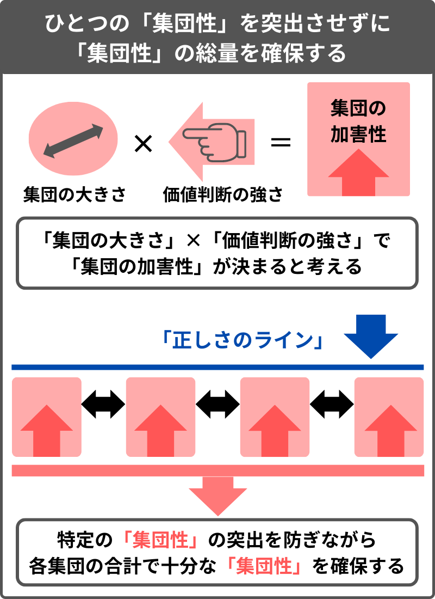</p>
<p>本章では、これから、この「集団の加害性」と、「BI」や「生産共同体」によって目指す「生産能力の向上」との関係について述べたい。</p>
<p><strong>本論では、「生産能力の向上」によって、同じだけの「豊かさ」を実現しながら「集団の加害性」を減らすことができる、あるいは、同じだけの「集団の加害性」のままより多くの「豊かさ」を実現できる、と考えることにする。</strong></p>
<p>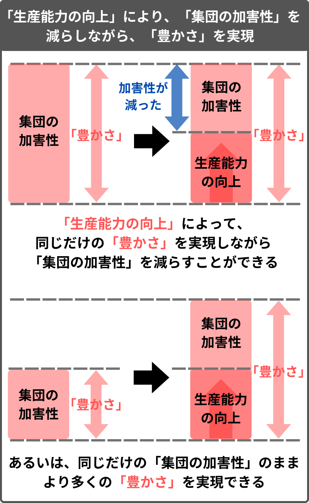</p>
<p>例えば、公衆衛生や医療の進歩によって、乳幼児死亡率は大きく低下した。これによって、過去と比べて生まれた子供の数が少なくなっても、人口を増や
したり、人口を維持することができるようになった。つまり、「不自然」に出生を促すような「強い価値判断」を機能させることなしに、人口置換水準の出生率
（豊かさ）を達成しやすくなったのだ。これは、「生産能力の向上」によって、「集団の加害性」を減らしても、同じだけの「豊かさ」が可能になった例と言え
るだろう。</p>
<p>次の例として、今の高齢者の介護は、「年寄りを敬うべき」「人間を相手にしている以上は丁寧な仕事をするべき」などのような「規範（価値判断）」に
よって、その水準が維持されているとする。そこで、「介護の効率化・省力化・自動化」が進めば、「規範」に頼ることなしに、これまでと同じ水準の介護を行
うことが可能になる。つまり、「生産能力の向上」によって、「やりたくないけれど生活のために介護の仕事をしなければならない」という人がそこから開放さ
れ、「集団の加害性」が減ることになる。</p>
<p>また別の例として、現在、国家による大規模なエネルギー開発やインフラ整備によって、生活の豊かさが賄われている。もし、自然エネルギーを効率的に
生活インフラに活用するイノベーションなどが進めば、今よりも小規模な集団でも、十分に豊かな生活が可能になるかもしれない。その場合は、「集団の大き
さ」が小さくなるという形で、「集団の加害性」が減ることになる。</p>
<p>以上のように、<strong>「生産能力の向上」は、「集団の加害性」を減らしながら、「豊かさ」を維持したり、より多くの「豊かさ」を実現しうる。</strong></p>
<p>&nbsp;</p>
<h2><span id="72">7.2 「豊かさ」と「正しさ」が両立する可能性</span></h2>
<p>本論では、「豊かさと正しさが相反する」という図式によって多くのことを説明してきた。</p>
<p>ただ、<strong>相反する「豊かさ」と「正しさ」は、ゼロサムの関係にあるわけではなく、両方が過去よりも強くなりうる。なぜなら、「生産能力の向上」によって、「豊かさ」の絶対的な水準が底上げされることがあるからだ。</strong></p>
<p>第1章（1.11）で述べたが、「集団性」と「個人性」が相反する作用だとしても、互いに強く押し合うように均衡すれば、過去と比べて両方が強くなりうる。</p>
<p>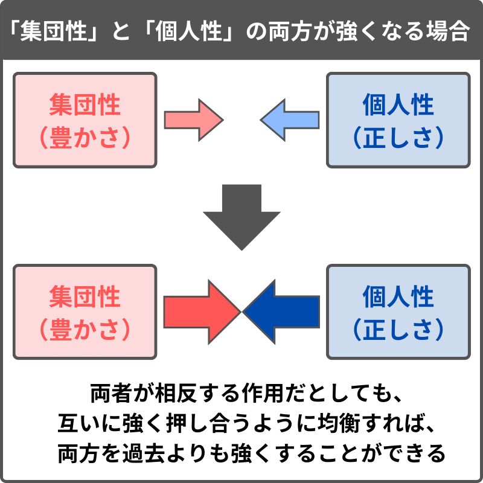</p>
<p>仮に、人口置換水準の出生率が維持されていることを「豊かさ」と「正しさ」が拮抗した状態とするなら、「豊かさ」が強くなって余裕ができたぶんだけ、同じだけの人口を維持しながら、「正しさ」を実現することができるようになる。</p>
<p>「正しさ」は、「やるべきこと」を増やして生産に「ブレーキ」をかける作用だが、「生産能力の向上」によって「豊かさ」が強まれば、そのぶんだけ
「正しさ」に費やせるリソースが増えていくだろう。例えば、生産や労働の自動化（豊かさ）が進んで、労働しなくても生活に必要なことが行われるようになる
ほど、スポーツや創作行為のような自己実現（正しさ）に時間を使いやすくなる。</p>
<p>つまり、<strong>長期的な視点で言えば、「正しさ」を実現するためにも、「生産能力の向上」が行われればよいことになる。</strong></p>
<p>先ほど提示した「集団の加害性」と「正しさのライン」の図式で説明するなら、<strong>「生産能力の向上」によって「豊かさ」が強まることで、「正しさ」の側もより強く機能させられるようになり、両者に押しつぶされるようにして「集団の加害性」が小さくなっていく</strong>イメージだ。</p>
<p>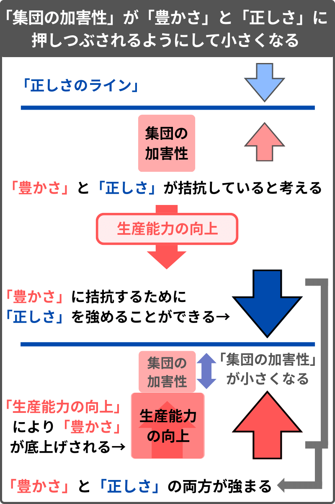</p>
<p>このように、「生産能力の向上」には、「集団の加害性」を減らし、「豊かさ」と「正しさ」の両方を強くできる可能性がある。</p>
<p><strong>しかし、注意したいのは、「生産能力の向上」を考える上でも、「集団の大きさ」と「価値判断の強さ」によって「集団の加害性」が決まる（「価値判断」が「集団の加害性」に関わる）という視点が必要であることだ。</strong></p>
<p>第3章（3.8）では、科学やテクノロジーにおいて、「価値判断」が「アクセル（集団性）」になることを述べた。何らかの科学技術は、「価値判断」
なしには「豊かさ」として機能しない。別の言い方をすれば、「豊かさ」において「価値判断」という要素を考慮しないわけにはいかない。</p>
<p><strong>「価値判断」が介在することで起こる「科学技術の進歩（生産能力の向上）」は、単に加害性を抑えながら「豊かさ」を実現してくれる都合の良いものではなく、その「価値判断の強さ」には、常に注意する必要がある。</strong></p>
<p>例えば、「介護の効率化・省力化・自動化」を目指そうとすることは、「価値判断が弱い（集団の加害性が強くなりにくい）」目的と言える。介護は、将
来の不安を減らすことで集団を強くする側面がある一方、それが充実するほど、むしろ集団が弱体化しやすいという側面もあるからだ。そのため、介護における
「生産能力の向上」を目指す「弱い価値判断」であれば、国家（大きな集団）がその発展を主導しても「集団の加害性」が大きくなりにくく、「正しさ」に許さ
れやすいと考えることができる。</p>
<p>一方、「価値判断が強い」場合の極端な例として、例えば、自分と同じ遺伝子の人間を複製できる「クローン人間」のようなものが技術的に可能になった
として、それは、たとえ個人（集団の大きさにおいて最小）の意図で行おうとしても、加害性が大きすぎると見なされて、「正しさ」に許されないだろう。</p>
<p>このように、<strong>テクノロジーの発展においても、「集団の大きさ」と「価値判断の強さ」の掛け算で「集団の加害性」が決まると考え、それが大きくなりすぎないように注意しなければならない。</strong></p>
<p></p>
<p>「生産能力の向上」には、加害性を抑えながら「豊かさ」を実現する可能性がある。しかし、何らかの技術革新は、「価値判断（集団の加害性を大きくし
うる要素）」とセットで起こるものであり、ただテクノロジーが進歩しさえすれば「集団の加害性」を減らせると考えていいわけではない。</p>
<p>&nbsp;</p>
<div class="matome">
<div>ここまでのまとめ</div>
<ul>
<li><strong>「生産能力の向上」によって、「集団の加害性」を減らしながら、「豊かさ」を維持したり、より多くの「豊かさ」を実現することができる。</strong></li>
<li><strong>「豊かさ」と「正しさ」が相反する作用だとしても、互いに強く押し合うように均衡すれば、過去と比べて両方が強くなりうる。</strong></li>
<li><strong>「豊かさ」と「正しさ」を拮抗させる前提において、「生産能力の向上」によって「豊かさ」の絶対的な水準が強まれば、それに応じて「正しさ」を強くすることができる。互いに強くなった「豊かさ」と「正しさ」に押しつぶされる形で、「集団の加害性」が小さくなっていく。</strong></li>
<li><strong>しかし、「生産能力の向上（テクノロジーの発展）」は、ただそれが進みさえすれば「集団の加害性」が減っていくという都合の良いものではなく、その「価値判断の強さ」には常に注意する必要がある。</strong></li>
</ul>
</div>
<p>&nbsp;</p>
<h2><span id="73">7.3 これからどのような社会を目指していくのか？</span></h2>
<p>本論では、ここまで様々なことを述べてきたが、本論の内容における<strong>「これからどのような社会を目指していくのか？」</strong>のイメージを、改めてまとめようと思う。</p>
<p>まず、本論では、今の日本のような社会において、「ビジネス」や「政治的正しさ」による<strong>「正しさ」の過剰を問題視</strong>している。しかし、「正しさ」は、それが間違っているわけでは決してなく、まさしく「正しい」ものであるがゆえに、「豊かさと正しさが相反する」という形の説明をしてきたのだ。</p>
<p>「正しいから豊かになる」が倒錯だとしても、「ビジネス（自由の尊重）」や「政治的正しさ（弱者性の尊重）」は、まさにその「正しさ」において重視されるべきものと言える。</p>
<p>しかし、「正しさ」を進めれば、それで世の中から加害がなくなっていくのかというと、そうもいかない。</p>
<p>なぜなら、<strong>「正しさ」に反する「豊かさ」が、生活の安心や社会の存続に不可欠なものである以上、「豊かさ」を強める動機は常にある状態</strong>だからだ。</p>
<p><strong>これから、「正しさ」の作用によって人類が滅びるまで人口が減り続けていくよりも、どこかの地点で反動が起こって、「豊かさ」の再
起が試みられる可能性が高い。そしてそれは、「ナショナリズムの再興」や「伝統的な価値観の再評価」といった、個人を強く否定する加害的なものになりやす
いだろう。</strong></p>
<p>第6章（6.12）で述べたように、「正しさ」は、「集団性」を抑制する作用だが、それを破って突出した「集団性」に対処することができない。</p>
<p>そのため、<strong>むやみに「正しさ」を強めすぎることは、長期的には、むしろ加害的な結果を引き起こす要因になりうる。</strong></p>
<p>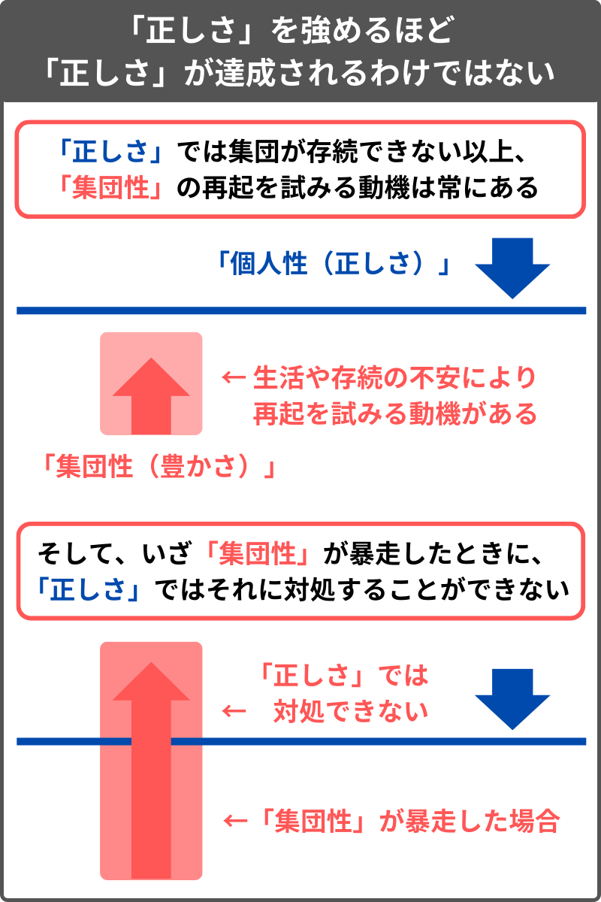</p>
<p>「集団性」が暴走したときに対処できるのは、「個人性」ではなく別の「集団性」である。</p>
<p>ゆえに、<strong>「集団性」の暴走を防ぐために、同じくらいの強さの「集団性」が、互いが強くなりすぎないように牽制し合っている必要がある。</strong></p>
<p>第6章では、「国家」と「生産共同体」が、「相手が強くなりすぎても困るが、弱くなりすぎても困る」という形で対立し合うイメージを提示した。</p>
<p>ここでは、「国家」と「生産共同体」のみならず、家族、地域社会、会社など、他の様々な集団も含めた、数多くの多層な集団が、特定の「集団性」が突出しないように牽制し合っている図式を提示したい。</p>
<p><strong>各集団は、どれかひとつが突出しないように強さを抑え合い、そのような横並びの集団の合計によって、生活や安心のために必要な「集団性」の総量を確保する。</strong></p>
<p>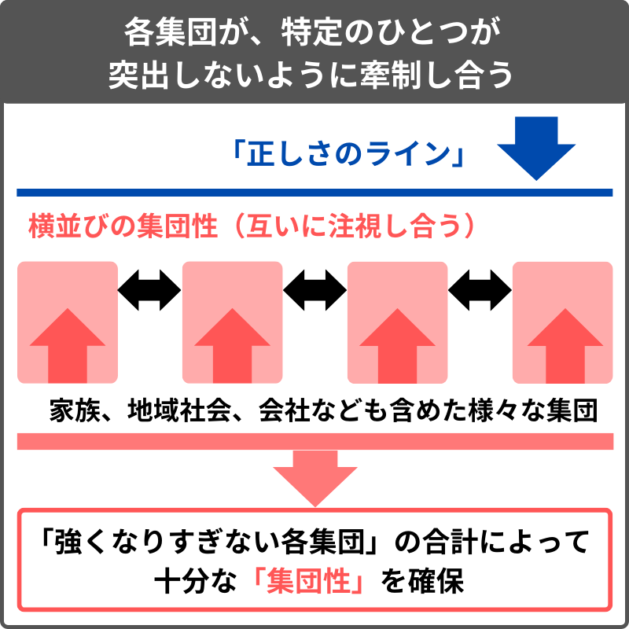</p>
<p>各集団が牽制し合っているイメージとしてわかりやすいのは、現状でも行われている、国家間における集団安全保障だろう。そこでは、平和を破壊しようとした国家に対して、残りのすべての国家が全員で対処するという考え方がされている。</p>
<p>本論では、そのような国家間の対立をより細かくして、それぞれの国家の内側にある「生産共同体」や、様々な中間集団も含めた多数の「集団性」が、どこかひとつが強くなりすぎないように注視し合い、<strong>特定の「集団性」が暴走した場合に、残りのすべての「集団性」がそれに対処することで、より安全な集団安全保障が行われると考える。</strong></p>
<p>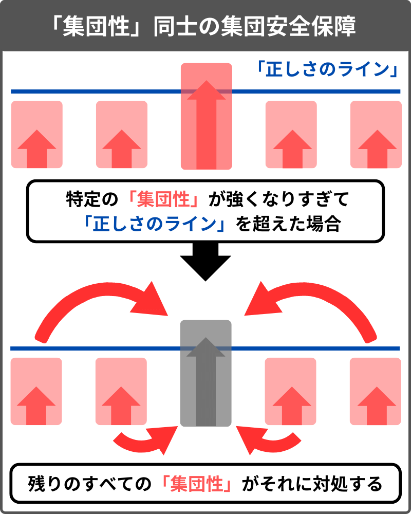</p>
<p>「集団性」が対立し合う状況が、依然として危険なものであることは変わりない。「集団性」の暴走がうまく対処されるとは限らず、集団同士の対立が大規模な加害に発展する可能性も当然のようにあるからだ。</p>
<p>だが、先に述べたように、「生産能力の向上」によって、「集団の加害性」を減らしていくことはできる。</p>
<p>そのため、ある種、<strong>「集団性」を横並びにして時間稼ぎをしながら、「集団の加害性」を減らしうる「生産能力の向上」に期待をする</strong>という形になる。</p>
<p>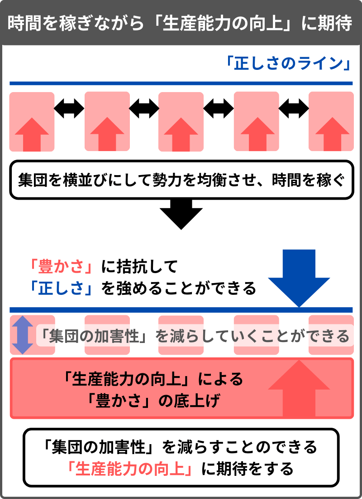</p>
<p>「生産能力の向上」によって「豊かさ」と「正しさ」の両方を強めることができれば、「集団の加害性」が弱くなっていき、大規模な加害が発生しにくくなっていくだろう。</p>
<p>以降では、ここで述べたイメージをもう少し具体的にするために、<strong>「世界平和を実現するためにはどうすればいいか？」</strong>という問いを設定して、その方法を説明していく。</p>
<p>&nbsp;</p>
<h2><span id="74">7.4 世界平和を実現する方法</span></h2>
<p>ここでは、<strong>「世界平和」</strong>を、以下のような状態であると便宜的に定義する。</p>
<div class="list1">
<ul>
<li><strong>国家間、民族間、共同体間において、大規模な戦争や紛争が起こっていない</strong></li>
<li><strong>核兵器などの強力な武器が廃絶されている</strong></li>
<li><strong>貧困、疎外、生活や存続の不安など、暴力の原因になりやすい社会問題が解決されている</strong></li>
<li><strong>世界中のすべての人間の権利が尊重され、誰もが自由に競争に参加することができる</strong></li>
</ul>
</div>
<p>このような「世界平和」を実現することは、当然ながら非常に難しいが、先ほど図示した考え方によって、それを目指していくことはできる。</p>
<p><strong>まず、前提として、強権的な国家主導のような「集団性」が、「豊かさ」にとっては有効であることを認める必要がある。</strong></p>
<p>すでに本論で何度も説明してきたことだが、大規模なエネルギー開発・インフラ整備や、個人の自由を否定する富国強兵政策など、国家の強権の発動は、「豊かさ」を獲得する上では効率的な方法だ。そうである以上、<strong>「豊かさ」が欠如した社会は、国家がナショナリズムを強める動機を持つ社会でもある。</strong></p>
<p><strong>そのため、「近代的な価値観が行き渡っていけば、誰も戦争などしなくなるはずだ」という考え方は、安易にそれを進めるべきではない。</strong></p>
<p>例えば、憲法9条のような「正しさ」は、原理的には、すべての国がそれを受け入れることで、平和が実現する。しかし、国家がむやみに戦力を放棄すれ
ば、他国がナショナリズムを強く機能させたときに、それに対処することができなくなってしまう。強権的な国家主導が「豊かさ」をもたらす以上、それをやっ
ても咎められない状況を生み出すと、平和が一気に崩壊するおそれがあり、安易な非武装化は、むしろ暴力を促進する無責任な態度と言えるだろう。武力の放棄
は、どこかが率先して行えばいいわけではなく、足並みを揃えて行う必要がある。</p>
<p>つまり、<strong>「集団性」は、特定のひとつが強くなりすぎない横並びの状態を維持しながら、足並みを揃えて「集団の加害性」を弱め、「正しさのライン」を押し下げていく必要がある。</strong></p>
<p>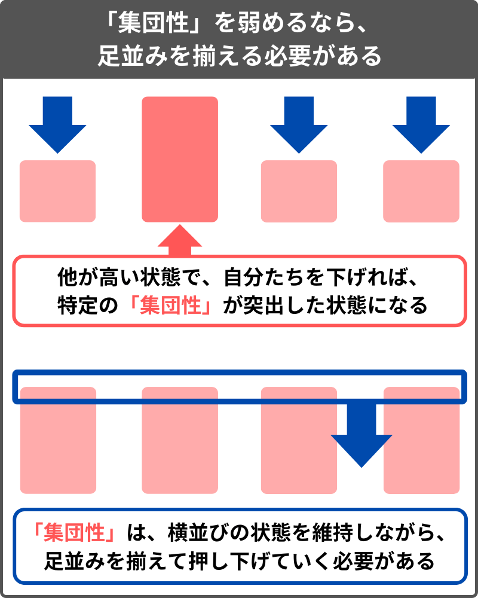</p>
<p><strong>では、どうすれば足並みを揃えて「集団性の加害性」を弱めていけるのかというと、その方法のひとつは、「生産能力の向上」によっ
て、小規模な集団でも十分な「豊かさ」が成り立つようにすることだ。基本的には、「集団の大きさ」が小さくなれば、「集団の加害性」も小さくなる。</strong></p>
<p>先に述べたように、「生産能力の向上」が起こるほど、「生産共同体」のような小さな集団でも、生活を賄えるようになりやすい。</p>
<p>別の言い方をすれば、「集団性」が欠如していること（生活が苦しいこと）は、「大きな集団」による「集団性」を強引に機能させようとする動機になる。そのため、<strong>「集団性」の暴走を避けるためにも、社会に十分な「集団性（豊かさ）」が行き渡っていなければならない。</strong></p>
<p>ゆえに本論では、ひとつの「集団性」を突出させずに、加害性を抑えた各集団の合計によって「集団性」の総量を確保する、と考える。十分な「集団性」のためには、弱い「集団性」は、むしろそれを育てようとする必要がある。</p>
<p><strong>強い「集団性」は抑えて、弱い「集団性」を育てることによって、特定の「集団性」の暴走を防ぎながら、生活の安心や社会の存続に必要な量の「集団性」を機能させようとするのだ。</strong></p>
<p>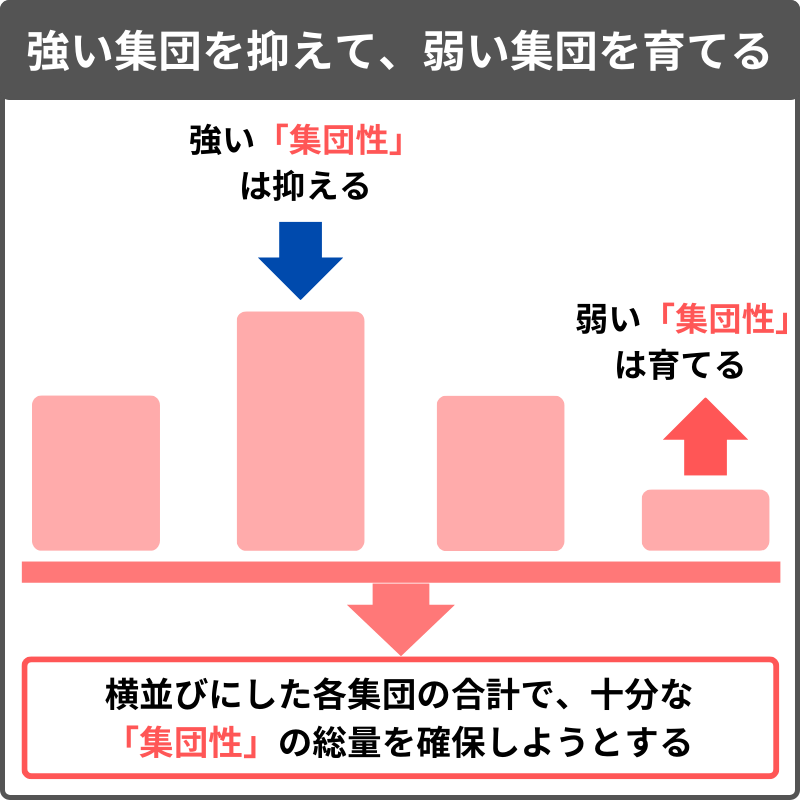</p>
<p>そして、「集団性」を横並びにし、勢力均衡による集団安全保障というある種の時間稼ぎをしながら、テクノロジーの進歩などの「生産能力の向上」が起こることに期待をする。</p>
<p>「生産能力の向上」によって「豊かさ」と「正しさ」の両方が強まれば、「集団の加害性」を減らしていくことができる。</p>
<p>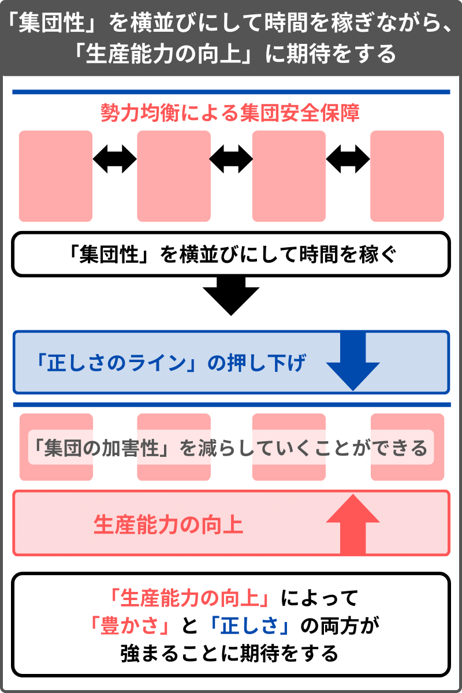</p>
<p><strong>「集団の加害性」が小さくなっていく具体例として、「少数の強い集団」による集団安全保障が、「多数の弱い集団」による集団安全保障になっていくことが挙げられる。</strong></p>
<p>今の国際社会は、「少数の強い集団」同士の勢力均衡によって、平和が維持されようとしている。</p>
<p>それは、「国家に多くを頼らなければ生活できない国民と、それゆえに強いリーダーシップを発揮しなければならない国家」が、「似たような状況の他の国々」と対立しているような状態だ。</p>
<p>このような「強い集団」同士の対立を、「弱い集団」同士の対立にするためには、「生産能力の向上」によって、国家にそれほど多くを頼らなくても自活できる集団が、国家の内側に存在するような状態にしていかなければならない。</p>
<p>第6章（6.13）で述べたような、<strong>「国家」と「国内の中間集団（生産共同体）」との対立を起こすことによって、「一蓮托生の国家と国民（強い集団）」を、「国民に譲歩する国家（弱い集団）」と「国家に多くを頼らない国民（弱い集団）」に分割し、「強い集団」を減らしていくことができる。</strong></p>
<p>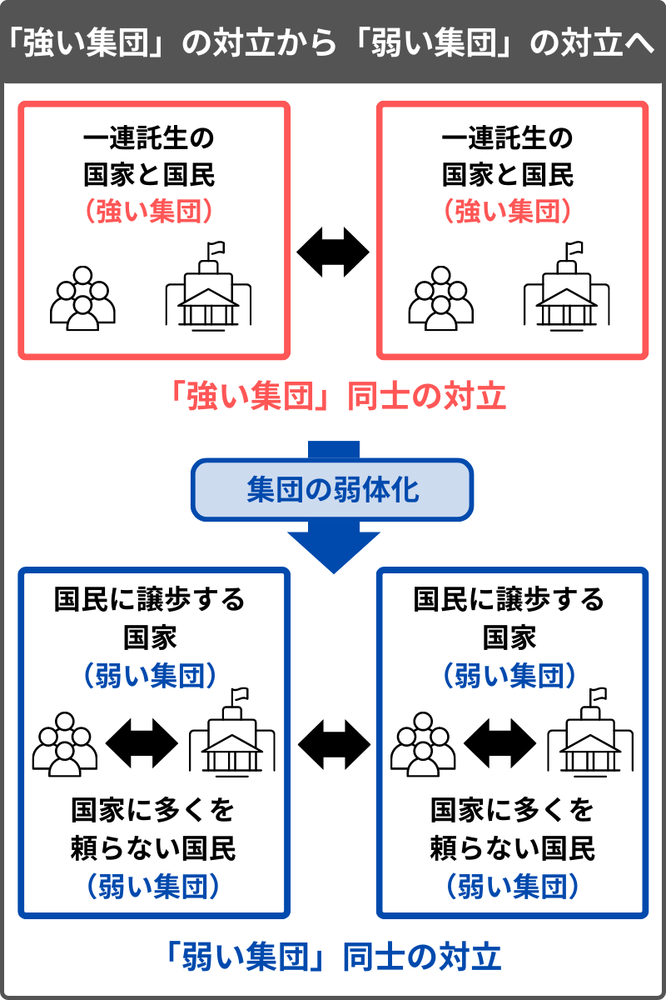</p>
<p>国家を弱くしていくという考え方は、国家に「積極財政（集団性）」が求められていると述べた第6章の内容と齟齬があるように思えるかもしれないが、
国家の「軍事力」や「開発力」といった強権的な「集団性」を弱めて、「BI」という「やや非貨幣的」な形の「集団性」を機能させるなら、総合的な「集団
の加害性」は弱まっていきやすいだろう。</p>
<p><strong>「強い集団」を「弱い集団」にしていき、なおかつ十分な「集団性」を確保するならば、「少数の強い集団」による集団安全保障から、「多数の弱い集団」による集団安全保障になっていきやすい。</strong></p>
<p>そして、「多数の弱い集団」に向かっていくことは、「正しさのライン」が押し下がっていくことを意味する。</p>
<p>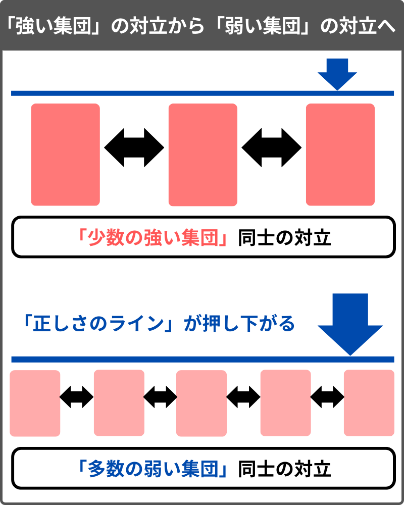</p>
<p><strong>集団安全保障が、「少数の強い集団」によるものではなく、「多数の弱い集団」によるものになるほど、暴走した「集団性」に対処しやすくなる。</strong></p>
<p><strong>グローバルな連帯のもと、何らかの暴力の予兆に対して、数多くの集団が団結してそれに対処しようとするならば、「集団性」を不当に高めようとした集団は、自身よりも遥かに大きな勢力の「集団性」を敵に回さなければならなくなる。</strong></p>
<p>例えば、国家が「集団性」を暴走させようとしたとき、その国家の内側にある中間集団や、他の国家や、数多の企業や、世界中の共同体などがそれに対処しようとするなら、「集団性」を突出させることは非常に難しくなるだろう。</p>
<p>もちろん国家に限らず、何らかの企業や共同体が、過度に法や人権を無視した行いをしようとしたとき、所属する国家のみならず、世界中の国家や企業や共同体を敵に回すという状況ならば、不当に「集団性」を強めることができなくなる。</p>
<p><strong>「豊かさ」のためには「集団性」が不可欠だが、十分な「豊かさ」が行き渡っていくほど、「集団性」を弱く細かくしていけるようになり、それによって安全性が高まっていく。</strong></p>
<p>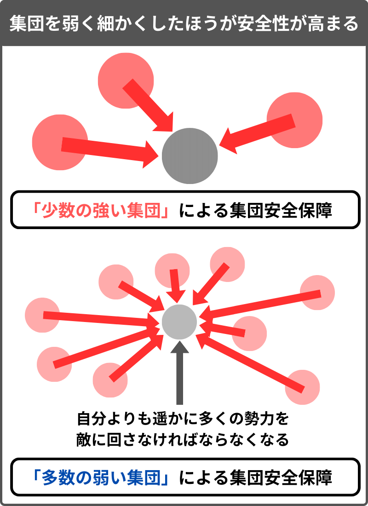</p>
<p>このような形で集団を弱くしていくことで、国家が核兵器のような強力な兵器を所持しない世界を目指していくことができる。</p>
<p>もちろん、「小さな集団」だからといって加害的な行為が不可能なわけでは決してなく、小規模な集団での生活を可能にするような「生産能力の向上」が起こるからこそ、潜在的な加害性が高まるという側面もあるだろう。</p>
<p>しかし、原理的には、「強い集団」同士が対立し合うよりも、「弱い集団」同士が対立し合っているほうが、加害性の程度は抑えられやすい。</p>
<p><strong>以上のように、「集団性」を横並びにしながら加害性を小さくしていくとして、当然ながら「個人性」も、世界平和にとって不可欠な役割を果たす。</strong></p>
<p>市場は、「豊かさ」のためではなく、「正しさ（平和）」のために肯定されるものだ。もし人々が「貨幣」に何の魅力も感じなくなったならば、それはそれで非常に危険な社会だろう。我々は、「正しさ」のために、市場が正常に機能する社会を維持しなければならない。</p>
<p>その点において、ビジネスやスポーツやアートのような競争の役割は、今後も失われることはなく、各々が他者にとって魅力的であるような卓越を目指すことは、平和のために必要な行いになる。</p>
<p>つまり、<strong>「世界平和」は、生活の安心や社会の存続に十分なほどの「集団性（豊かさ）」と、市場やメリトクラシーや社会福祉などの「個人性（正しさ）」の両方が機能することで、実現に向かっていく。</strong></p>
<p>何らかの加害を引き起こしうる、「集団性」の暴走の萌芽があったとする。</p>
<p>まず、「集団性」を強める主な動機は、貧困や不安といった「豊かさ」の欠如なので、十分な「集団性」が確保されている社会であれば、その動機がなくなることになる。</p>
<p>また、特定の「集団性」の突出に対して、他の集団が睨みを利かせる集団安全保障が機能しているほど、「集団性」を無理に強めて得られるリターンが割
に合わないものになりやすい。「集団性」は、各勢力が横並びで対立している状態を維持する必要があり、さらにそれは、「少数の強い集団」によるものではな
く、「多数の弱い集団」によるものであるほうが望ましい。</p>
<p>つまり、<strong>個々人が「弱い集団」に多層に所属することで十分な「集団性」が確保されているというのが、「集団性」の暴走が起こりにくい平和な状態と言える。</strong></p>
<p>加えて、平和のためには、「個人性（正しさ）」が機能している必要がある。</p>
<p>「ビジネス（個人が自由に競争に参加できること）」と「政治的正しさ（弱者性に配慮や補助が与えられること）」は、「豊かさ」には繋がらなくとも、「正しさ」のために重視されるべきものだ。</p>
<p><strong>個人が、市場の商品に魅力を感じ、自己実現のための競争に参加でき、自身の抱える弱者性を認められやすい社会であれば、加害的な集団に手を貸すといったことは行われにくくなるだろう。</strong></p>
<p><strong>そのような「正しさ」のためには、機会の平等・近代的な教育・グローバルな情報へのアクセスなどが、すべての人に与えられる世界を目指していく必要がある。</strong></p>
<p>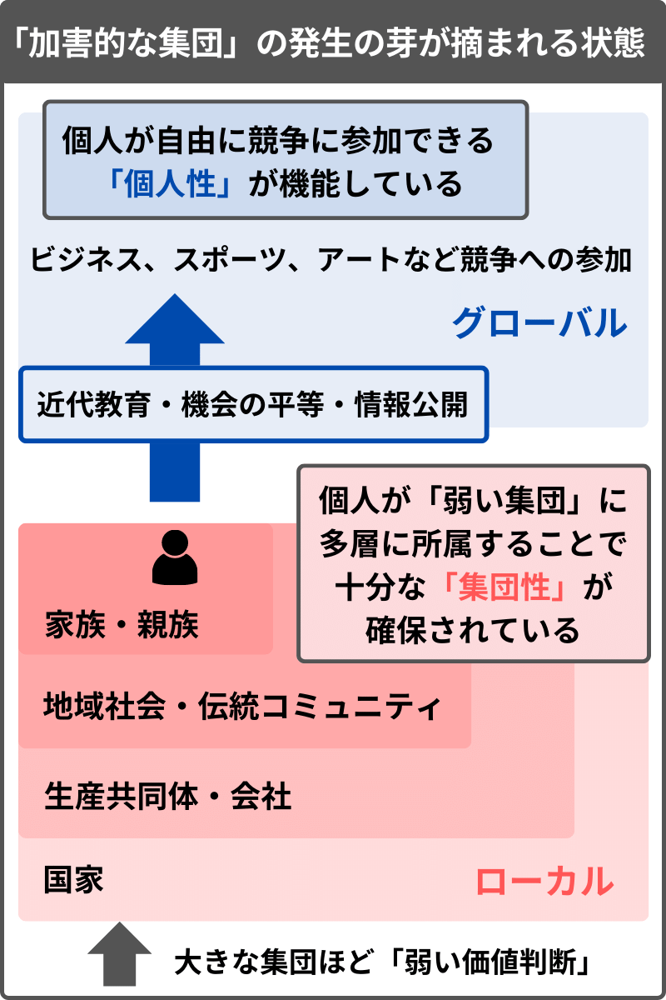</p>
<p>このように、「集団性」と「個人性」の両方から、加害的な集団の芽が摘まれるような状態の実現を目指していけば、先に「世界平和」と定義した世界に近づいていくはずだ。</p>
<p>&nbsp;</p>
<div class="matome">
<div>ここまでのまとめ</div>
<ul>
<li><strong>「個人性」は「集団性」を抑えようとする作用だが、開き直って「集団性」を突出させた集団に対して、「個人性」では対処することができない。「集団性」に対処するためには、また別の「集団性」が必要になる。</strong></li>
<li><strong>ゆえに、むやみに集団を弱くしようとするのではなく、各集団の強さを横並びにした上で、足並みを揃えて「正しさのライン」を押し下げていかなければならない。</strong></li>
<li><strong>「集団性」の欠如は、「集団性」を強めようとする動機になるので、強さを抑えた各集団の合計によって、十分な「集団性」を確保しようとする。そのため、強い「集団性」は抑えて、弱い「集団性」は育てようとすることになる。</strong></li>
<li><strong>集団同士の勢力均衡によって暴走を防ぎ、時間を稼ぎながら、「生産能力の向上」に期待をする。「生産能力の向上」によって「豊かさ」と「正しさ」の両方が強まれば、それによって「集団の加害性」が小さくなりうる。</strong></li>
<li><strong>「生産能力の向上」により、例えば、小規模な集団でも豊かな生活がしやすくなると、「少数の強い集団」による勢力均衡から、「多数の弱い集団」による勢力均衡へと、対立し合う集団の強さが弱まっていきやすい。</strong></li>
<li><strong>加害を防ごうとするグローバルな連帯が機能しているのであれば、「少数の弱い集団」による集団安全保障のほうが、安全性が高くなりやすい。これを進めることで、大国が強力な兵器を所有する必要のない世界を目指していく。</strong></li>
<li><strong>貧困や不安が起こらないほどの「集団性（豊かさ）」と、個人が暴力的な集団に加担しようと思わなくなるほどの「個人性（正しさ）」の両方が強く機能することで、世界平和が実現する。</strong></li>
</ul>
</div>
<p>&nbsp;</p>
<h2><span id="75">7.5 究極的な善悪の問題には答えてはいない</span></h2>
<p>先ほどまでは、「世界平和とされるような状況を実現するにはどうすればいいか？」という便宜的な問いを設定し、その方法を説明してきた形になる。<strong>しかし、本論では、「どんな社会を目指すべきか？（そもそも世界平和を目指すべきか？）」といった究極的な目的については、何らかの答えを提示してはいない。</strong></p>
<p>本章では、「生産能力の向上」によって、「豊かさ」と「正しさ」の両方が過去よりも強まりうるとしてきた。しかし、そのような考え方自体が「集団性
（豊かさ）」に寄ったものであるとも言える。「個人性（正しさ）」に寄った考え方をするならば、「生産能力の向上」は、加害性のポテンシャルが高まってい
くことであり、それによって「豊かさ」と「正しさ」が両立するというのは、あまりにも楽観的すぎる。</p>
<p><strong>本論では、「豊かさ」と「正しさ」の、どちらを目指すべきとも断言できないと考える。つまり、究極的な善悪の問題について、何らかの答えを提示しているわけではない。</strong></p>
<p><strong>本論で指摘してきたのは、万人にとっての普遍的な「善い」を追求することが「正しさ」であり、「善い」が万人と個人の中間（ローカル）だと「豊かさ」になる、という構造だ。</strong></p>
<p>何らかの「善さ、正義、道徳」は、それが「ローカル（特定の人たちのもの）」であれば、「豊かさを生み出しうるが、間違いうる」という「集団性」と
して機能し、それが「グローバル（すべての人間のもの）」であれば、「正しいが、持続性がなく衰退していく」という「個人性」として機能する。</p>
<p>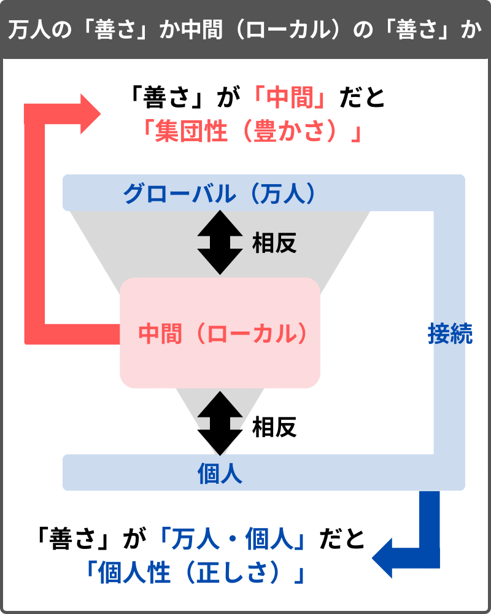</p>
<p><strong>今の日本のような社会を「個人性（正しさ）」が過剰として、「集団性（豊かさ）」の再起を目指すというのが、ここまで本論が暗黙に
前提としていた態度だった。しかし、「豊かさ」と「正しさ」のバランスを取ることや、「豊かさ」と「正しさ」の両方を強めることが、「善い」ことであると
主張するつもりはない。</strong></p>
<p>本論では、例えば、出生率が人口置換水準であることを「豊かさ」と「正しさ」が釣り合った状態の例とした。ただ、今のこの時点から、そのような人口置換水準の出生率を目指すことを「善い」と言える理由が、特にあるわけではない。</p>
<p>「正しさ」の過剰に対しての「豊かさ」の再起が「善い」ことなのかどうかは、これまでのサピエンスの歴史をどう評価するかによって分かれるだろう。</p>
<p>これまでのサピエンスが行ってきた加害を重く見るならば、「正しさ」によって人口が減っていく今の傾向は、もっとそれが進んで、ますます人間の数が
減っていったほうが「善い」ことになる。一方で、これからのサピエンスの可能性に期待をするならば、「豊かさ」を重視し、出生率の改善や「生産能力の向
上」を進めていくほうが「善い」という考えになるだろう。</p>
<p>本論では、「豊かさ」と「正しさ」を、様々な形で説明してきたが、最後に、<strong>「正しさ」には「被害性の最小化」を志向する性質があり、「豊かさ」には「可能性の最大化」を志向する性質がある</strong>ことを述べたい。</p>
<div class="list1">
<ul>
<li><strong>個人性（正しさ）：被害性の最小化</strong></li>
<li><strong>集団性（豊かさ）：可能性の最大化</strong></li>
</ul>
</div>
<p><strong>「被害性の最小化（正しさ）」と「可能性の最大化（豊かさ）」には、根本的に相反する部分がある。</strong></p>
<p>本章で先に述べたように、「生産能力の向上」によって、「集団の加害性」を減らしていける可能性はあるだろう。しかし、それでも人間は、いればいるだけ加害の種であることは避けられない。</p>
<p><strong>「被害性の最小化（正しさ）」を究極の目的とするならば、人間はなるべく存在しないほうが望ましいことになる。</strong>人の数が減っていけば、そのぶんだけ被害者も少なくなっていきやすいからだ。極論だが、「正しさ」が究極的に意図するのは、人類が絶滅した状態（それゆえにひとりの被害者も存在しない状態）だ。</p>
<p>一方、<strong>「可能性の最大化（豊かさ）」を究極の目的とするならば、人権侵害や戦争を必ずしも悪とは言えなくなる。</strong>なるべく多くの人間を作り、何らかの価値判断のもとに選別し、争いを加速させたほうが、より早くより多く、人類が何らかの新しい可能性を見出すかもしれないからだ。</p>
<p><strong>結局のところ、ここでは、「可能性の最大化（豊かさ）」と「被害性の最小化（正しさ）」の、どちらを目指すべきとも断言できない。</strong></p>
<p>本論は、究極的な善悪の問題について、何らかの答えを出しているわけではないのだ。</p>
<p>ただ、これから「何が善いか？」を考える上で、本論で提示した「豊かさと正しさが相反する」という視点は、意味のあるものになるかもしれない。なぜなら、今の社会では、「正しいから豊かになる」という倒錯が非常に根深く機能しているからだ。</p>
<p>&nbsp;</p>
<h2><span id="76">7.6 「正しいから豊かになる」という倒錯</span></h2>
<p><strong>「正しいから豊かになる」という倒錯は、近代社会が生み出した強力な呪縛であり、現代の社会でも非常に大きな影響力を持っている。本論では、その倒錯を繰り返し指摘してきた。</strong></p>
<p>本章で先に、「生産能力の向上」によって「豊かさ」が強まり、それに対応して「正しさ」を強めることができる、という考え方を述べたが、それが実際に起こったのが近代だった。</p>
<p>近代は、科学技術の進歩や国家間の大戦などの要因で、爆発的な「生産能力の向上」が起こった時代でもあった。「正しいから豊かになる」わけではないが、「豊かになりすぎたから正しさが必要とされた」あるいは「正しさが豊かさを抑えてきた」とは言えるだろう。</p>
<p>その点において、<strong>「近代的な価値観」や「近代的なものの考え方（近代思想）」は、「豊かさ」が過剰な社会において「正しさ」を見出そうとするものだった。</strong>近代の思想家たちが成し遂げた仕事のひとつは、個人を否定する「集団性」が当然の社会において、「個人（理性・本能）」に光を当てることだったのだ。そうやって彼らが築き上げてきた「近代的な価値観」は、現代において、ますます大きな影響力を持つようになっている。</p>
<p>そして、いまやその「正しさ（近代的な価値観）」は、かつてそれを論じた思想家たちの想像を超えて、「結婚して子供をつくる」や「共同体のために貢献する」といった、当時は言及するまでもないような前提だった社会存続の条件を破壊するほど、過剰に成功している。</p>
<p><strong>現在の先進諸国は、「豊かさ」が過剰だった時代とは別の問題に直面している。それは、今度は「正しさ」のほうが過剰になり、科学技
術が進歩して効率化などが進んでいるはずなのに、生活が苦しくなり、少子化によって社会の存続が危ぶまれているといった問題だ。このような事情を説明する
ために、本論では「豊かさと正しさが相反する」という図式を提示してきたのだ。</strong></p>
<p>「近代的なものの考え方」において、「普遍性（誰にとっても客観的であること）の追求」と「普遍性の否定（相対化）」が繰り返されてきた歴史がある。普遍性と相対性、客観と主観、本質と事実、形而上と自然、などのような対立は、近代思想ではよく論じられてきたテーマだ。</p>
<p>それに対して、本論が提示しているのは、<strong>「普遍性の追求」であれ「その否定」であれ、どちらも「正しさ」であり、それらの中間が「豊かさ」であるという図式</strong>だ。</p>
<p><strong>普遍性の追求あるいはその否定は、「正しさ」の両極の片方から片方へ移ろうとすることであり、その際に「豊かさ」を経由する。これも、「正しいから豊かになる」という倒錯の理由として指摘できるだろう。</strong></p>
<p>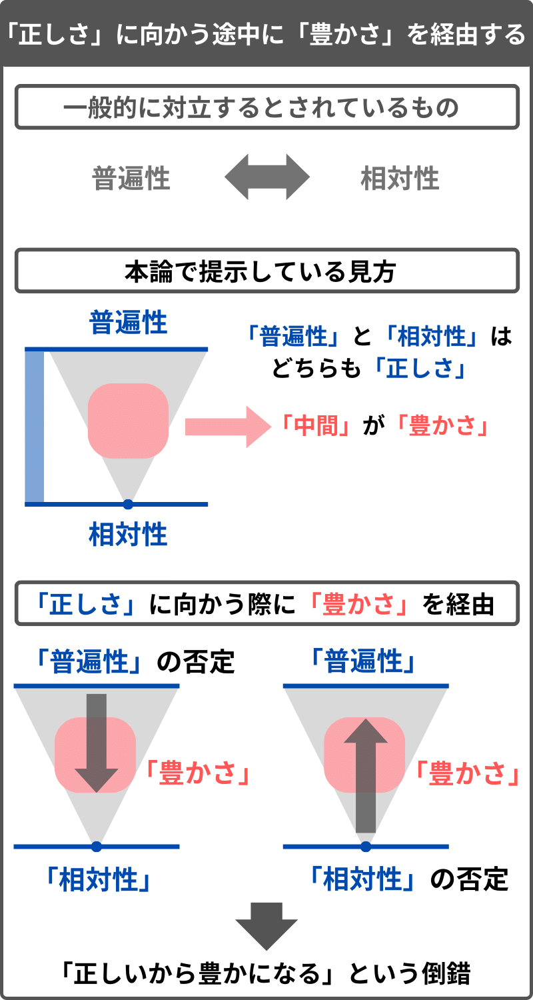</p>
<p><strong>普遍性を追求する試み（あるいは否定する試み）は、それが中途半端（ローカル）であることによって現実的な力を持つ</strong>、というのが本論の見方だ。</p>
<p>そして、「正しさ（近代化）」が中途半端であるがゆえに力を持った近代社会を批判する「ポストモダン」のような動きも、それが近代の不備を指摘して多様性を重視しようとする（普遍性を否定しようとする）試みだからこそ、むしろ近代化の順当な帰結にすぎない。</p>
<p>本論が考える、近代のあとの問題は、「近代的な価値観（正しさ）」が成功したがゆえに、今度は集団の存続が危うくなっているといったものだ。</p>
<p>ただ、集団にとって必要な「豊かさ」は、まさに「正しさ」に反するがゆえに、「豊かさ」を戻そうとすることが「正しい」とは言えない。先に述べたように本論では、「豊かさ」を目指すべきとも、「正しさ」を目指すべきとも、断言できないとしている。</p>
<p>本論で意図している「ベーシックインカムが実現した社会」は、貨幣を稼げなくとも（競争に勝てなくとも）生活が成り立つだけの「豊かさ」が行き渡っ
ていながら、同時に、人々が「貨幣（相対的な競争における優位）」に魅力を感じているような「正しい」社会、ということになる。そのような社会において、
いったい人々がどのような考え方をし、どのような新しい問題に直面するのかは、今の時点で予測することは難しい。</p>
<p><strong>いずれにしても、近代のあとの社会に歩を進めるためには、まずは「正しいから豊かになる」という近代の呪縛から解放される必要があるだろう。</strong></p>
<p>&nbsp;</p>
<div class="matome">
<div>ここまでのまとめ</div>
<ul>
<li><strong>「生産能力の向上」によって、「豊かさ」と「正しさ」の両方が強まり、「集団の加害性」を減らすことができるとしてきたが、そのような見方自体が「集団性（豊かさ）」に寄ったものとも言える。</strong></li>
<li><strong>本論は、究極的な善悪の問題については、扱うことができていない。本論で指摘してきたのは、万人にとっての普遍的な「善い」を追求することが「正しさ」であり、それが万人と個人の中間であると「豊かさ」になるという構造だ。</strong></li>
<li><strong>「被害性の最小化（正しさ）」と「可能性の最大化（豊かさ）」は、根本的に相反する部分があり、どちらを重視することが「善い」とも言えない。また、両者のバランスを取ろうとすることや、両方を強めることも、それが「善い」と言い切れるわけではない。</strong></li>
<li><strong>しかし、「正しいから豊かになる」という倒錯が強い影響力を持っている現代において、「何が善いか？」を考える上でも、「豊かさと正しさが相反する」という視点は、意味のあるものになる。</strong></li>
<li><strong>近代思想は、「豊かさ」が過剰な社会のなかで「正しさ」を見出そうとするものだった。現代において、それはむしろ過剰に成功し、今度は「豊かさ」の欠如（「正しさ」の過剰）が問題になっている。</strong></li>
<li><strong>近代思想によく見られるテーマとして、「普遍性の追求」と「普遍性の否定」の対立があるが、本論ではその両方が「正しさ」であり、両者の中間が「豊かさ」であるという見方を提示している。</strong></li>
<li><strong>「普遍性の追求」にしても「普遍性の否定」にしても、それを行おうとするときに「豊かさ」を経由し、それも、「正しいから豊かになる」という倒錯が起こる理由のひとつとして挙げることができる。</strong></li>
<li><strong>近代のあとの社会がどのようなものになるかはわからないが、まずは「正しいから豊かになる」という近代の呪縛から解放される必要がある。</strong></li>
</ul>
</div>
<p>&nbsp;</p>
<h2><span id="7">第7章のまとめ</span></h2>
<p>本章では、「生産能力の向上」により、過去よりも「集団の加害性」を減らしながら、同程度の「豊かさ」を維持したり、より多くの「豊かさ」を実現できるとした。</p>
<p>人口置換水準の出生率を維持するなど、「豊かさ」と「正しさ」を拮抗させる前提において、「豊かさ」が底上げされたぶんだけ、それに対応して「正し
さ」も強めることができる。そして、「生産能力の向上」によって「豊かさ」と「正しさ」の両方が強まることで、「集団の加害性」が少なくなっていくと考え
る。</p>
<p>例えば、「生産能力の向上」により、「生産共同体」のような小規模な集団でも自活できるようになると、そのような集団があることで国家の権力に抵抗
しやすくなる。「国家」は、国内の中間集団が力を持つからこそ、強い国家主導によって国民の面倒を見る必要がなくなる代わりに、「BI」のような「やや非
貨幣的」なやり方をしなければならなくなる。</p>
<p>このようにして、「国家に多くを頼らざるをえない国民と、それゆえに強権を発揮しなければならない国家」といった、ひとまとまりの「強い集団」では
なく、貨幣を否定する「生産共同体」と「BI」を提供する「国家」といった、「弱い集団」の組み合わせになり、加害性が抑えられやすくなる。</p>
<p>現在行われているような「少数の強い集団」による勢力均衡が、「多数の弱い集団」による勢力均衡になることで、「集団の加害性」が低い、平和な世界に向かっていく。</p>
<p>ただ、そのためには、むやみに国力を落とそうとするのではなく、「集団性」の強さを横並びにしながら、足並みを揃えて少しずつ勢力を弱めていく必要がある。</p>
<p>本論では、ひとつの「集団性」が突出しないように集団同士が牽制し合いながら、加害性を抑えた各集団の合計によって、十分な「集団性」の総量を確保する、という考え方を提示した。</p>
<p>平和のためには、特定の「集団性」が暴走したときに対処できる別の「集団性」が必要になる。また、貧困や不安といった「集団性」の欠如が、平和を乱
す主な動機となるので、生活の安心や社会の存続に十分なほどの「集団性」が機能していることも必要である。ゆえに、「集団性」の強さを横並びにしながら、
各集団の合計によって十分な「集団性」を確保しようとする。そのようにして平和を維持しながら、「集団の加害性」を減らすことのできる「生産能力の向上」
に期待をするのだ。</p>
<p>加えて、平和のためには「個人性」も不可欠だ。本論では、貨幣を否定する「生産共同体」といった方法を提示してきたが、人々が「貨幣」にまったく魅
力を感じなくなった社会は、それはそれで非常に危険な状態だ。ゆえに、ビジネスやスポーツやアートのような競争も、平和を維持するために必要になる。</p>
<p>つまり、生活や存続を成り立たせる「集団性」と、競争への参加を許す「個人性」の両方が機能することで、世界平和が実現に向かっていく。</p>
<p>ただ、本章では「豊かさ」と「正しさ」の両方を強めて世界平和を実現する方法を述べてきたのだが、それをすることが「善い」とは断言できないとも考える。</p>
<p>「被害性の最小化（正しさ）」と「可能性の最大化（豊かさ）」には、根本的に相反する部分があり、「生産能力の向上」を進めることで「豊かさ」と「正しさ」が両立するといった考え方自体が、「集団性」の側に寄ったものになる。</p>
<p>本論では、究極的な善悪の問題については扱っていない。</p>
<p>本論で指摘したのは、万人にとっての普遍的な「善さ」を追求するのが「個人性（正しさ）」であり、「善さ」が万人と個人の中間だと「集団性（集団性）」になるという構造だ。</p>
<p>近代思想において、「普遍性の追求」と「普遍性の否定」の対立が続いてきたが、それらはどちらも「正しさ」であり、片方の側から片方を否定するときに「豊かさ」を経由する。これも、「正しいから豊かになる」という倒錯が起こる理由として指摘することができる。</p>
<p>この第7章では、「BI」が実現に向かい始めたあとの社会について論じたが、そのような社会がどのようなものになるかは、予測が難しいとしている。いずれにしても、まずは現状における「正しいから豊かになる」という倒錯から抜け出す必要がある。</p>
<p>本論の内容は以上になるが、次の第8章では、ここまでの内容を手短にまとめている。</p>
<p>&nbsp;</p>
<p><strong><a href="index.html/ch8">第8章 要約とあとがき</a></strong></p>
<p>&nbsp;</p>
<p>&nbsp;</p>
<ul>
<li><a href="index.html/">TOP</a></li>
<li><a href="index.html/ch0">第0章 イントロダクション</a></li>
<li><a href="index.html/ch1">第1章 なぜ社会に必要な仕事ほど評価されないのか</a></li>
<li><a href="index.html/ch2">第2章 豊かさと正しさが相反する理由</a></li>
<li><a href="index.html/ch3">第3章 政治的に正しくなるほど福祉が弱くなる</a></li>
<li><a href="index.html/ch4">第4章 ベーシックインカムを可能にする考え方</a></li>
<li><a href="index.html/ch5">第5章 貨幣を否定する生産共同体</a></li>
<li><a href="index.html/ch6">第6章 積極財政と資本主義</a></li>
<li><a href="index.html/ch7">第7章 ベーシックインカムが実現したあとの社会</a></li>
<li><a href="index.html/ch8">第8章 要約とあとがき</a></li>
</ul>
<p>&nbsp;</p>
	</div><!-- .entry-content -->

	
</article><!-- #post-682 -->

	<nav class="navigation post-navigation" aria-label="投稿">
		<h2 class="screen-reader-text">投稿ナビゲーション</h2>
		<div class="nav-links"><div class="nav-previous"><a href="https://basicincom.com/ch6/" rel="prev"><span class="screen-reader-text">前の投稿</span><span aria-hidden="true" class="nav-subtitle">前</span> <span class="nav-title"><span class="nav-title-icon-wrapper"><svg class="icon icon-arrow-left" aria-hidden="true" role="img"> <use href="#icon-arrow-left" xlink:href="#icon-arrow-left"></use> </svg></span>第6章 積極財政と資本主義</span></a></div><div class="nav-next"><a href="https://basicincom.com/ch8/" rel="next"><span class="screen-reader-text">次の投稿</span><span aria-hidden="true" class="nav-subtitle">次</span> <span class="nav-title">第8章 要約とあとがき<span class="nav-title-icon-wrapper"><svg class="icon icon-arrow-right" aria-hidden="true" role="img"> <use href="#icon-arrow-right" xlink:href="#icon-arrow-right"></use> </svg></span></span></a></div></div>
	</nav>
		</main><!-- #main -->
	</div><!-- #primary -->
	
<aside id="secondary" class="widget-area" aria-label="ブログサイドバー">
	<section id="block-3" class="widget widget_block">
<div class="wp-block-group is-layout-flow wp-block-group-is-layout-flow"><div class="wp-block-group__inner-container"></div></div>
</section><section id="block-4" class="widget widget_block">
<div class="wp-block-group is-layout-flow wp-block-group-is-layout-flow"><div class="wp-block-group__inner-container"></div></div>
</section><section id="block-5" class="widget widget_block">
<div class="wp-block-group is-vertical is-layout-flex wp-container-3 wp-block-group-is-layout-flex"></div>
</section><section id="block-12" class="widget widget_block">
<ul>
<li><a href="index.html/">TOP</a></li>


<li><a href="index.html/ch0">第0章 イントロダクション</a></li>


<li><a href="index.html/ch1">第1章 なぜ社会に必要な仕事ほど評価されないのか</a></li>


<li><a href="index.html/ch2">第2章 豊かさと正しさが相反する理由</a></li>


<li><a href="index.html/ch3">第3章 政治的に正しくなるほど福祉が弱くなる</a></li>


<li><a href="index.html/ch4">第4章 ベーシックインカムを可能にする考え方</a></li>


<li><a href="index.html/ch5">第5章 貨幣を否定する生産共同体</a></li>


<li><a href="index.html/ch6">第6章 積極財政と資本主義</a></li>


<li><a href="index.html/ch7">第7章 ベーシックインカムが実現したあとの社会</a></li>


<li><a href="index.html/ch8">第8章 要約とあとがき</a></li>


<li><a href="https://basicincom.com/prof">著者プロフィール</a></li>
</ul>
</section><section id="block-14" class="widget widget_block widget_search"><form role="search" method="get" action="https://basicincom.com/" class="wp-block-search__button-outside wp-block-search__text-button wp-block-search"><label class="wp-block-search__label" for="wp-block-search__input-4">検索</label><div class="wp-block-search__inside-wrapper "><input class="wp-block-search__input" id="wp-block-search__input-4" placeholder="" type="search" name="s" required=""><button aria-label="検索" class="wp-block-search__button wp-element-button" type="submit">検索</button></div></form></section></aside><!-- #secondary -->
</div><!-- .wrap -->


		</div><!-- #content -->

		<footer id="colophon" class="site-footer">
			<div class="wrap">
				
<div class="site-info">
		<a href="https://ja.wordpress.org/" class="imprint">
		Proudly powered by WordPress	</a>
</div><!-- .site-info -->
			</div><!-- .wrap -->
		</footer><!-- #colophon -->
	</div><!-- .site-content-contain -->
</div><!-- #page -->
<style id="core-block-supports-inline-css">
.wp-container-3.wp-container-3{flex-direction:column;align-items:flex-start;}
</style>
<script src="chapter_7_files/front.min.js" id="toc-front-js"></script>
<script id="twentyseventeen-skip-link-focus-fix-js-extra">
var twentyseventeenScreenReaderText = {"quote":"<svg class=\"icon icon-quote-right\" aria-hidden=\"true\" role=\"img\"> <use href=\"#icon-quote-right\" xlink:href=\"#icon-quote-right\"><\/use> <\/svg>"};
var twentyseventeenScreenReaderText = {"quote":"<svg class=\"icon icon-quote-right\" aria-hidden=\"true\" role=\"img\"> <use href=\"#icon-quote-right\" xlink:href=\"#icon-quote-right\"><\/use> <\/svg>"};
</script>
<script src="chapter_7_files/skip-link-focus-fix.js" id="twentyseventeen-skip-link-focus-fix-js"></script>
<script src="chapter_7_files/global.js" id="twentyseventeen-global-js"></script>
<script src="chapter_7_files/jquery.scrollTo.js" id="jquery-scrollto-js"></script>
<script id="wp_slimstat-js-extra">
var SlimStatParams = {"ajaxurl":"https:\/\/basicincom.com\/wp-admin\/admin-ajax.php","baseurl":"\/","dnt":"noslimstat,ab-item","ci":"YTo0OntzOjEyOiJjb250ZW50X3R5cGUiO3M6NDoicG9zdCI7czo4OiJjYXRlZ29yeSI7czoxOiIzIjtzOjEwOiJjb250ZW50X2lkIjtpOjY4MjtzOjY6ImF1dGhvciI7czoxMDoiYmFzaWNpbmNvbSI7fQ--.15f5720e7c64c1f21e6afadb3c41cf0d"};
var SlimStatParams = {"ajaxurl":"https:\/\/basicincom.com\/wp-admin\/admin-ajax.php","baseurl":"\/","dnt":"noslimstat,ab-item","ci":"YTo0OntzOjEyOiJjb250ZW50X3R5cGUiO3M6NDoicG9zdCI7czo4OiJjYXRlZ29yeSI7czoxOiIzIjtzOjEwOiJjb250ZW50X2lkIjtpOjY4MjtzOjY6ImF1dGhvciI7czoxMDoiYmFzaWNpbmNvbSI7fQ--.15f5720e7c64c1f21e6afadb3c41cf0d"};
</script>
<script defer="defer" src="chapter_7_files/wp-slimstat.min.js" id="wp_slimstat-js"></script>
<svg style="position: absolute; width: 0; height: 0; overflow: hidden;" version="1.1" xmlns="http://www.w3.org/2000/svg" xlink="http://www.w3.org/1999/xlink">
<defs>
<symbol id="icon-behance" viewBox="0 0 37 32">
<path class="path1" d="M33 6.054h-9.125v2.214h9.125v-2.214zM28.5 13.661q-1.607 0-2.607 0.938t-1.107 2.545h7.286q-0.321-3.482-3.571-3.482zM28.786 24.107q1.125 0 2.179-0.571t1.357-1.554h3.946q-1.786 5.482-7.625 5.482-3.821 0-6.080-2.357t-2.259-6.196q0-3.714 2.33-6.17t6.009-2.455q2.464 0 4.295 1.214t2.732 3.196 0.902 4.429q0 0.304-0.036 0.839h-11.75q0 1.982 1.027 3.063t2.973 1.080zM4.946 23.214h5.286q3.661 0 3.661-2.982 0-3.214-3.554-3.214h-5.393v6.196zM4.946 13.625h5.018q1.393 0 2.205-0.652t0.813-2.027q0-2.571-3.393-2.571h-4.643v5.25zM0 4.536h10.607q1.554 0 2.768 0.25t2.259 0.848 1.607 1.723 0.563 2.75q0 3.232-3.071 4.696 2.036 0.571 3.071 2.054t1.036 3.643q0 1.339-0.438 2.438t-1.179 1.848-1.759 1.268-2.161 0.75-2.393 0.232h-10.911v-22.5z"></path>
</symbol>
<symbol id="icon-deviantart" viewBox="0 0 18 32">
<path class="path1" d="M18.286 5.411l-5.411 10.393 0.429 0.554h4.982v7.411h-9.054l-0.786 0.536-2.536 4.875-0.536 0.536h-5.375v-5.411l5.411-10.411-0.429-0.536h-4.982v-7.411h9.054l0.786-0.536 2.536-4.875 0.536-0.536h5.375v5.411z"></path>
</symbol>
<symbol id="icon-medium" viewBox="0 0 32 32">
<path class="path1" d="M10.661 7.518v20.946q0 0.446-0.223 0.759t-0.652 0.313q-0.304 0-0.589-0.143l-8.304-4.161q-0.375-0.179-0.634-0.598t-0.259-0.83v-20.357q0-0.357 0.179-0.607t0.518-0.25q0.25 0 0.786 0.268l9.125 4.571q0.054 0.054 0.054 0.089zM11.804 9.321l9.536 15.464-9.536-4.75v-10.714zM32 9.643v18.821q0 0.446-0.25 0.723t-0.679 0.277-0.839-0.232l-7.875-3.929zM31.946 7.5q0 0.054-4.58 7.491t-5.366 8.705l-6.964-11.321 5.786-9.411q0.304-0.5 0.929-0.5 0.25 0 0.464 0.107l9.661 4.821q0.071 0.036 0.071 0.107z"></path>
</symbol>
<symbol id="icon-slideshare" viewBox="0 0 32 32">
<path class="path1" d="M15.589 13.214q0 1.482-1.134 2.545t-2.723 1.063-2.723-1.063-1.134-2.545q0-1.5 1.134-2.554t2.723-1.054 2.723 1.054 1.134 2.554zM24.554 13.214q0 1.482-1.125 2.545t-2.732 1.063q-1.589 0-2.723-1.063t-1.134-2.545q0-1.5 1.134-2.554t2.723-1.054q1.607 0 2.732 1.054t1.125 2.554zM28.571 16.429v-11.911q0-1.554-0.571-2.205t-1.982-0.652h-19.857q-1.482 0-2.009 0.607t-0.527 2.25v12.018q0.768 0.411 1.58 0.714t1.446 0.5 1.446 0.33 1.268 0.196 1.25 0.071 1.045 0.009 1.009-0.036 0.795-0.036q1.214-0.018 1.696 0.482 0.107 0.107 0.179 0.161 0.464 0.446 1.089 0.911 0.125-1.625 2.107-1.554 0.089 0 0.652 0.027t0.768 0.036 0.813 0.018 0.946-0.018 0.973-0.080 1.089-0.152 1.107-0.241 1.196-0.348 1.205-0.482 1.286-0.616zM31.482 16.339q-2.161 2.661-6.643 4.5 1.5 5.089-0.411 8.304-1.179 2.018-3.268 2.643-1.857 0.571-3.25-0.268-1.536-0.911-1.464-2.929l-0.018-5.821v-0.018q-0.143-0.036-0.438-0.107t-0.42-0.089l-0.018 6.036q0.071 2.036-1.482 2.929-1.411 0.839-3.268 0.268-2.089-0.643-3.25-2.679-1.875-3.214-0.393-8.268-4.482-1.839-6.643-4.5-0.446-0.661-0.071-1.125t1.071 0.018q0.054 0.036 0.196 0.125t0.196 0.143v-12.393q0-1.286 0.839-2.196t2.036-0.911h22.446q1.196 0 2.036 0.911t0.839 2.196v12.393l0.375-0.268q0.696-0.482 1.071-0.018t-0.071 1.125z"></path>
</symbol>
<symbol id="icon-snapchat-ghost" viewBox="0 0 30 32">
<path class="path1" d="M15.143 2.286q2.393-0.018 4.295 1.223t2.92 3.438q0.482 1.036 0.482 3.196 0 0.839-0.161 3.411 0.25 0.125 0.5 0.125 0.321 0 0.911-0.241t0.911-0.241q0.518 0 1 0.321t0.482 0.821q0 0.571-0.563 0.964t-1.232 0.563-1.232 0.518-0.563 0.848q0 0.268 0.214 0.768 0.661 1.464 1.83 2.679t2.58 1.804q0.5 0.214 1.429 0.411 0.5 0.107 0.5 0.625 0 1.25-3.911 1.839-0.125 0.196-0.196 0.696t-0.25 0.83-0.589 0.33q-0.357 0-1.107-0.116t-1.143-0.116q-0.661 0-1.107 0.089-0.571 0.089-1.125 0.402t-1.036 0.679-1.036 0.723-1.357 0.598-1.768 0.241q-0.929 0-1.723-0.241t-1.339-0.598-1.027-0.723-1.036-0.679-1.107-0.402q-0.464-0.089-1.125-0.089-0.429 0-1.17 0.134t-1.045 0.134q-0.446 0-0.625-0.33t-0.25-0.848-0.196-0.714q-3.911-0.589-3.911-1.839 0-0.518 0.5-0.625 0.929-0.196 1.429-0.411 1.393-0.571 2.58-1.804t1.83-2.679q0.214-0.5 0.214-0.768 0-0.5-0.563-0.848t-1.241-0.527-1.241-0.563-0.563-0.938q0-0.482 0.464-0.813t0.982-0.33q0.268 0 0.857 0.232t0.946 0.232q0.321 0 0.571-0.125-0.161-2.536-0.161-3.393 0-2.179 0.482-3.214 1.143-2.446 3.071-3.536t4.714-1.125z"></path>
</symbol>
<symbol id="icon-yelp" viewBox="0 0 27 32">
<path class="path1" d="M13.804 23.554v2.268q-0.018 5.214-0.107 5.446-0.214 0.571-0.911 0.714-0.964 0.161-3.241-0.679t-2.902-1.589q-0.232-0.268-0.304-0.643-0.018-0.214 0.071-0.464 0.071-0.179 0.607-0.839t3.232-3.857q0.018 0 1.071-1.25 0.268-0.339 0.705-0.438t0.884 0.063q0.429 0.179 0.67 0.518t0.223 0.75zM11.143 19.071q-0.054 0.982-0.929 1.25l-2.143 0.696q-4.911 1.571-5.214 1.571-0.625-0.036-0.964-0.643-0.214-0.446-0.304-1.339-0.143-1.357 0.018-2.973t0.536-2.223 1-0.571q0.232 0 3.607 1.375 1.25 0.518 2.054 0.839l1.5 0.607q0.411 0.161 0.634 0.545t0.205 0.866zM25.893 24.375q-0.125 0.964-1.634 2.875t-2.42 2.268q-0.661 0.25-1.125-0.125-0.25-0.179-3.286-5.125l-0.839-1.375q-0.25-0.375-0.205-0.821t0.348-0.821q0.625-0.768 1.482-0.464 0.018 0.018 2.125 0.714 3.625 1.179 4.321 1.42t0.839 0.366q0.5 0.393 0.393 1.089zM13.893 13.089q0.089 1.821-0.964 2.179-1.036 0.304-2.036-1.268l-6.75-10.679q-0.143-0.625 0.339-1.107 0.732-0.768 3.705-1.598t4.009-0.563q0.714 0.179 0.875 0.804 0.054 0.321 0.393 5.455t0.429 6.777zM25.714 15.018q0.054 0.696-0.464 1.054-0.268 0.179-5.875 1.536-1.196 0.268-1.625 0.411l0.018-0.036q-0.411 0.107-0.821-0.071t-0.661-0.571q-0.536-0.839 0-1.554 0.018-0.018 1.339-1.821 2.232-3.054 2.679-3.643t0.607-0.696q0.5-0.339 1.161-0.036 0.857 0.411 2.196 2.384t1.446 2.991v0.054z"></path>
</symbol>
<symbol id="icon-vine" viewBox="0 0 27 32">
<path class="path1" d="M26.732 14.768v3.536q-1.804 0.411-3.536 0.411-1.161 2.429-2.955 4.839t-3.241 3.848-2.286 1.902q-1.429 0.804-2.893-0.054-0.5-0.304-1.080-0.777t-1.518-1.491-1.83-2.295-1.92-3.286-1.884-4.357-1.634-5.616-1.259-6.964h5.054q0.464 3.893 1.25 7.116t1.866 5.661 2.17 4.205 2.5 3.482q3.018-3.018 5.125-7.25-2.536-1.286-3.982-3.929t-1.446-5.946q0-3.429 1.857-5.616t5.071-2.188q3.179 0 4.875 1.884t1.696 5.313q0 2.839-1.036 5.107-0.125 0.018-0.348 0.054t-0.821 0.036-1.125-0.107-1.107-0.455-0.902-0.92q0.554-1.839 0.554-3.286 0-1.554-0.518-2.357t-1.411-0.804q-0.946 0-1.518 0.884t-0.571 2.509q0 3.321 1.875 5.241t4.768 1.92q1.107 0 2.161-0.25z"></path>
</symbol>
<symbol id="icon-vk" viewBox="0 0 35 32">
<path class="path1" d="M34.232 9.286q0.411 1.143-2.679 5.25-0.429 0.571-1.161 1.518-1.393 1.786-1.607 2.339-0.304 0.732 0.25 1.446 0.304 0.375 1.446 1.464h0.018l0.071 0.071q2.518 2.339 3.411 3.946 0.054 0.089 0.116 0.223t0.125 0.473-0.009 0.607-0.446 0.491-1.054 0.223l-4.571 0.071q-0.429 0.089-1-0.089t-0.929-0.393l-0.357-0.214q-0.536-0.375-1.25-1.143t-1.223-1.384-1.089-1.036-1.009-0.277q-0.054 0.018-0.143 0.063t-0.304 0.259-0.384 0.527-0.304 0.929-0.116 1.384q0 0.268-0.063 0.491t-0.134 0.33l-0.071 0.089q-0.321 0.339-0.946 0.393h-2.054q-1.268 0.071-2.607-0.295t-2.348-0.946-1.839-1.179-1.259-1.027l-0.446-0.429q-0.179-0.179-0.491-0.536t-1.277-1.625-1.893-2.696-2.188-3.768-2.33-4.857q-0.107-0.286-0.107-0.482t0.054-0.286l0.071-0.107q0.268-0.339 1.018-0.339l4.893-0.036q0.214 0.036 0.411 0.116t0.286 0.152l0.089 0.054q0.286 0.196 0.429 0.571 0.357 0.893 0.821 1.848t0.732 1.455l0.286 0.518q0.518 1.071 1 1.857t0.866 1.223 0.741 0.688 0.607 0.25 0.482-0.089q0.036-0.018 0.089-0.089t0.214-0.393 0.241-0.839 0.17-1.446 0-2.232q-0.036-0.714-0.161-1.304t-0.25-0.821l-0.107-0.214q-0.446-0.607-1.518-0.768-0.232-0.036 0.089-0.429 0.304-0.339 0.679-0.536 0.946-0.464 4.268-0.429 1.464 0.018 2.411 0.232 0.357 0.089 0.598 0.241t0.366 0.429 0.188 0.571 0.063 0.813-0.018 0.982-0.045 1.259-0.027 1.473q0 0.196-0.018 0.75t-0.009 0.857 0.063 0.723 0.205 0.696 0.402 0.438q0.143 0.036 0.304 0.071t0.464-0.196 0.679-0.616 0.929-1.196 1.214-1.92q1.071-1.857 1.911-4.018 0.071-0.179 0.179-0.313t0.196-0.188l0.071-0.054 0.089-0.045t0.232-0.054 0.357-0.009l5.143-0.036q0.696-0.089 1.143 0.045t0.554 0.295z"></path>
</symbol>
<symbol id="icon-search" viewBox="0 0 30 32">
<path class="path1" d="M20.571 14.857q0-3.304-2.348-5.652t-5.652-2.348-5.652 2.348-2.348 5.652 2.348 5.652 5.652 2.348 5.652-2.348 2.348-5.652zM29.714 29.714q0 0.929-0.679 1.607t-1.607 0.679q-0.964 0-1.607-0.679l-6.125-6.107q-3.196 2.214-7.125 2.214-2.554 0-4.884-0.991t-4.018-2.679-2.679-4.018-0.991-4.884 0.991-4.884 2.679-4.018 4.018-2.679 4.884-0.991 4.884 0.991 4.018 2.679 2.679 4.018 0.991 4.884q0 3.929-2.214 7.125l6.125 6.125q0.661 0.661 0.661 1.607z"></path>
</symbol>
<symbol id="icon-envelope-o" viewBox="0 0 32 32">
<path class="path1" d="M29.714 26.857v-13.714q-0.571 0.643-1.232 1.179-4.786 3.679-7.607 6.036-0.911 0.768-1.482 1.196t-1.545 0.866-1.83 0.438h-0.036q-0.857 0-1.83-0.438t-1.545-0.866-1.482-1.196q-2.821-2.357-7.607-6.036-0.661-0.536-1.232-1.179v13.714q0 0.232 0.17 0.402t0.402 0.17h26.286q0.232 0 0.402-0.17t0.17-0.402zM29.714 8.089v-0.438t-0.009-0.232-0.054-0.223-0.098-0.161-0.161-0.134-0.25-0.045h-26.286q-0.232 0-0.402 0.17t-0.17 0.402q0 3 2.625 5.071 3.446 2.714 7.161 5.661 0.107 0.089 0.625 0.527t0.821 0.67 0.795 0.563 0.902 0.491 0.768 0.161h0.036q0.357 0 0.768-0.161t0.902-0.491 0.795-0.563 0.821-0.67 0.625-0.527q3.714-2.946 7.161-5.661 0.964-0.768 1.795-2.063t0.83-2.348zM32 7.429v19.429q0 1.179-0.839 2.018t-2.018 0.839h-26.286q-1.179 0-2.018-0.839t-0.839-2.018v-19.429q0-1.179 0.839-2.018t2.018-0.839h26.286q1.179 0 2.018 0.839t0.839 2.018z"></path>
</symbol>
<symbol id="icon-close" viewBox="0 0 25 32">
<path class="path1" d="M23.179 23.607q0 0.714-0.5 1.214l-2.429 2.429q-0.5 0.5-1.214 0.5t-1.214-0.5l-5.25-5.25-5.25 5.25q-0.5 0.5-1.214 0.5t-1.214-0.5l-2.429-2.429q-0.5-0.5-0.5-1.214t0.5-1.214l5.25-5.25-5.25-5.25q-0.5-0.5-0.5-1.214t0.5-1.214l2.429-2.429q0.5-0.5 1.214-0.5t1.214 0.5l5.25 5.25 5.25-5.25q0.5-0.5 1.214-0.5t1.214 0.5l2.429 2.429q0.5 0.5 0.5 1.214t-0.5 1.214l-5.25 5.25 5.25 5.25q0.5 0.5 0.5 1.214z"></path>
</symbol>
<symbol id="icon-angle-down" viewBox="0 0 21 32">
<path class="path1" d="M19.196 13.143q0 0.232-0.179 0.411l-8.321 8.321q-0.179 0.179-0.411 0.179t-0.411-0.179l-8.321-8.321q-0.179-0.179-0.179-0.411t0.179-0.411l0.893-0.893q0.179-0.179 0.411-0.179t0.411 0.179l7.018 7.018 7.018-7.018q0.179-0.179 0.411-0.179t0.411 0.179l0.893 0.893q0.179 0.179 0.179 0.411z"></path>
</symbol>
<symbol id="icon-folder-open" viewBox="0 0 34 32">
<path class="path1" d="M33.554 17q0 0.554-0.554 1.179l-6 7.071q-0.768 0.911-2.152 1.545t-2.563 0.634h-19.429q-0.607 0-1.080-0.232t-0.473-0.768q0-0.554 0.554-1.179l6-7.071q0.768-0.911 2.152-1.545t2.563-0.634h19.429q0.607 0 1.080 0.232t0.473 0.768zM27.429 10.857v2.857h-14.857q-1.679 0-3.518 0.848t-2.929 2.134l-6.107 7.179q0-0.071-0.009-0.223t-0.009-0.223v-17.143q0-1.643 1.179-2.821t2.821-1.179h5.714q1.643 0 2.821 1.179t1.179 2.821v0.571h9.714q1.643 0 2.821 1.179t1.179 2.821z"></path>
</symbol>
<symbol id="icon-twitter" viewBox="0 0 30 32">
<path class="path1" d="M28.929 7.286q-1.196 1.75-2.893 2.982 0.018 0.25 0.018 0.75 0 2.321-0.679 4.634t-2.063 4.437-3.295 3.759-4.607 2.607-5.768 0.973q-4.839 0-8.857-2.589 0.625 0.071 1.393 0.071 4.018 0 7.161-2.464-1.875-0.036-3.357-1.152t-2.036-2.848q0.589 0.089 1.089 0.089 0.768 0 1.518-0.196-2-0.411-3.313-1.991t-1.313-3.67v-0.071q1.214 0.679 2.607 0.732-1.179-0.786-1.875-2.054t-0.696-2.75q0-1.571 0.786-2.911 2.161 2.661 5.259 4.259t6.634 1.777q-0.143-0.679-0.143-1.321 0-2.393 1.688-4.080t4.080-1.688q2.5 0 4.214 1.821 1.946-0.375 3.661-1.393-0.661 2.054-2.536 3.179 1.661-0.179 3.321-0.893z"></path>
</symbol>
<symbol id="icon-facebook" viewBox="0 0 19 32">
<path class="path1" d="M17.125 0.214v4.714h-2.804q-1.536 0-2.071 0.643t-0.536 1.929v3.375h5.232l-0.696 5.286h-4.536v13.554h-5.464v-13.554h-4.554v-5.286h4.554v-3.893q0-3.321 1.857-5.152t4.946-1.83q2.625 0 4.071 0.214z"></path>
</symbol>
<symbol id="icon-github" viewBox="0 0 27 32">
<path class="path1" d="M13.714 2.286q3.732 0 6.884 1.839t4.991 4.991 1.839 6.884q0 4.482-2.616 8.063t-6.759 4.955q-0.482 0.089-0.714-0.125t-0.232-0.536q0-0.054 0.009-1.366t0.009-2.402q0-1.732-0.929-2.536 1.018-0.107 1.83-0.321t1.679-0.696 1.446-1.188 0.946-1.875 0.366-2.688q0-2.125-1.411-3.679 0.661-1.625-0.143-3.643-0.5-0.161-1.446 0.196t-1.643 0.786l-0.679 0.429q-1.661-0.464-3.429-0.464t-3.429 0.464q-0.286-0.196-0.759-0.482t-1.491-0.688-1.518-0.241q-0.804 2.018-0.143 3.643-1.411 1.554-1.411 3.679 0 1.518 0.366 2.679t0.938 1.875 1.438 1.196 1.679 0.696 1.83 0.321q-0.696 0.643-0.875 1.839-0.375 0.179-0.804 0.268t-1.018 0.089-1.17-0.384-0.991-1.116q-0.339-0.571-0.866-0.929t-0.884-0.429l-0.357-0.054q-0.375 0-0.518 0.080t-0.089 0.205 0.161 0.25 0.232 0.214l0.125 0.089q0.393 0.179 0.777 0.679t0.563 0.911l0.179 0.411q0.232 0.679 0.786 1.098t1.196 0.536 1.241 0.125 0.991-0.063l0.411-0.071q0 0.679 0.009 1.58t0.009 0.973q0 0.321-0.232 0.536t-0.714 0.125q-4.143-1.375-6.759-4.955t-2.616-8.063q0-3.732 1.839-6.884t4.991-4.991 6.884-1.839zM5.196 21.982q0.054-0.125-0.125-0.214-0.179-0.054-0.232 0.036-0.054 0.125 0.125 0.214 0.161 0.107 0.232-0.036zM5.75 22.589q0.125-0.089-0.036-0.286-0.179-0.161-0.286-0.054-0.125 0.089 0.036 0.286 0.179 0.179 0.286 0.054zM6.286 23.393q0.161-0.125 0-0.339-0.143-0.232-0.304-0.107-0.161 0.089 0 0.321t0.304 0.125zM7.036 24.143q0.143-0.143-0.071-0.339-0.214-0.214-0.357-0.054-0.161 0.143 0.071 0.339 0.214 0.214 0.357 0.054zM8.054 24.589q0.054-0.196-0.232-0.286-0.268-0.071-0.339 0.125t0.232 0.268q0.268 0.107 0.339-0.107zM9.179 24.679q0-0.232-0.304-0.196-0.286 0-0.286 0.196 0 0.232 0.304 0.196 0.286 0 0.286-0.196zM10.214 24.5q-0.036-0.196-0.321-0.161-0.286 0.054-0.25 0.268t0.321 0.143 0.25-0.25z"></path>
</symbol>
<symbol id="icon-bars" viewBox="0 0 27 32">
<path class="path1" d="M27.429 24v2.286q0 0.464-0.339 0.804t-0.804 0.339h-25.143q-0.464 0-0.804-0.339t-0.339-0.804v-2.286q0-0.464 0.339-0.804t0.804-0.339h25.143q0.464 0 0.804 0.339t0.339 0.804zM27.429 14.857v2.286q0 0.464-0.339 0.804t-0.804 0.339h-25.143q-0.464 0-0.804-0.339t-0.339-0.804v-2.286q0-0.464 0.339-0.804t0.804-0.339h25.143q0.464 0 0.804 0.339t0.339 0.804zM27.429 5.714v2.286q0 0.464-0.339 0.804t-0.804 0.339h-25.143q-0.464 0-0.804-0.339t-0.339-0.804v-2.286q0-0.464 0.339-0.804t0.804-0.339h25.143q0.464 0 0.804 0.339t0.339 0.804z"></path>
</symbol>
<symbol id="icon-google-plus" viewBox="0 0 41 32">
<path class="path1" d="M25.661 16.304q0 3.714-1.554 6.616t-4.429 4.536-6.589 1.634q-2.661 0-5.089-1.036t-4.179-2.786-2.786-4.179-1.036-5.089 1.036-5.089 2.786-4.179 4.179-2.786 5.089-1.036q5.107 0 8.768 3.429l-3.554 3.411q-2.089-2.018-5.214-2.018-2.196 0-4.063 1.107t-2.955 3.009-1.089 4.152 1.089 4.152 2.955 3.009 4.063 1.107q1.482 0 2.723-0.411t2.045-1.027 1.402-1.402 0.875-1.482 0.384-1.321h-7.429v-4.5h12.357q0.214 1.125 0.214 2.179zM41.143 14.125v3.75h-3.732v3.732h-3.75v-3.732h-3.732v-3.75h3.732v-3.732h3.75v3.732h3.732z"></path>
</symbol>
<symbol id="icon-linkedin" viewBox="0 0 27 32">
<path class="path1" d="M6.232 11.161v17.696h-5.893v-17.696h5.893zM6.607 5.696q0.018 1.304-0.902 2.179t-2.42 0.875h-0.036q-1.464 0-2.357-0.875t-0.893-2.179q0-1.321 0.92-2.188t2.402-0.866 2.375 0.866 0.911 2.188zM27.429 18.714v10.143h-5.875v-9.464q0-1.875-0.723-2.938t-2.259-1.063q-1.125 0-1.884 0.616t-1.134 1.527q-0.196 0.536-0.196 1.446v9.875h-5.875q0.036-7.125 0.036-11.554t-0.018-5.286l-0.018-0.857h5.875v2.571h-0.036q0.357-0.571 0.732-1t1.009-0.929 1.554-0.777 2.045-0.277q3.054 0 4.911 2.027t1.857 5.938z"></path>
</symbol>
<symbol id="icon-quote-right" viewBox="0 0 30 32">
<path class="path1" d="M13.714 5.714v12.571q0 1.857-0.723 3.545t-1.955 2.92-2.92 1.955-3.545 0.723h-1.143q-0.464 0-0.804-0.339t-0.339-0.804v-2.286q0-0.464 0.339-0.804t0.804-0.339h1.143q1.893 0 3.232-1.339t1.339-3.232v-0.571q0-0.714-0.5-1.214t-1.214-0.5h-4q-1.429 0-2.429-1t-1-2.429v-6.857q0-1.429 1-2.429t2.429-1h6.857q1.429 0 2.429 1t1 2.429zM29.714 5.714v12.571q0 1.857-0.723 3.545t-1.955 2.92-2.92 1.955-3.545 0.723h-1.143q-0.464 0-0.804-0.339t-0.339-0.804v-2.286q0-0.464 0.339-0.804t0.804-0.339h1.143q1.893 0 3.232-1.339t1.339-3.232v-0.571q0-0.714-0.5-1.214t-1.214-0.5h-4q-1.429 0-2.429-1t-1-2.429v-6.857q0-1.429 1-2.429t2.429-1h6.857q1.429 0 2.429 1t1 2.429z"></path>
</symbol>
<symbol id="icon-mail-reply" viewBox="0 0 32 32">
<path class="path1" d="M32 20q0 2.964-2.268 8.054-0.054 0.125-0.188 0.429t-0.241 0.536-0.232 0.393q-0.214 0.304-0.5 0.304-0.268 0-0.42-0.179t-0.152-0.446q0-0.161 0.045-0.473t0.045-0.42q0.089-1.214 0.089-2.196 0-1.804-0.313-3.232t-0.866-2.473-1.429-1.804-1.884-1.241-2.375-0.759-2.75-0.384-3.134-0.107h-4v4.571q0 0.464-0.339 0.804t-0.804 0.339-0.804-0.339l-9.143-9.143q-0.339-0.339-0.339-0.804t0.339-0.804l9.143-9.143q0.339-0.339 0.804-0.339t0.804 0.339 0.339 0.804v4.571h4q12.732 0 15.625 7.196 0.946 2.393 0.946 5.946z"></path>
</symbol>
<symbol id="icon-youtube" viewBox="0 0 27 32">
<path class="path1" d="M17.339 22.214v3.768q0 1.196-0.696 1.196-0.411 0-0.804-0.393v-5.375q0.393-0.393 0.804-0.393 0.696 0 0.696 1.196zM23.375 22.232v0.821h-1.607v-0.821q0-1.214 0.804-1.214t0.804 1.214zM6.125 18.339h1.911v-1.679h-5.571v1.679h1.875v10.161h1.786v-10.161zM11.268 28.5h1.589v-8.821h-1.589v6.75q-0.536 0.75-1.018 0.75-0.321 0-0.375-0.375-0.018-0.054-0.018-0.625v-6.5h-1.589v6.982q0 0.875 0.143 1.304 0.214 0.661 1.036 0.661 0.857 0 1.821-1.089v0.964zM18.929 25.857v-3.518q0-1.304-0.161-1.768-0.304-1-1.268-1-0.893 0-1.661 0.964v-3.875h-1.589v11.839h1.589v-0.857q0.804 0.982 1.661 0.982 0.964 0 1.268-0.982 0.161-0.482 0.161-1.786zM24.964 25.679v-0.232h-1.625q0 0.911-0.036 1.089-0.125 0.643-0.714 0.643-0.821 0-0.821-1.232v-1.554h3.196v-1.839q0-1.411-0.482-2.071-0.696-0.911-1.893-0.911-1.214 0-1.911 0.911-0.5 0.661-0.5 2.071v3.089q0 1.411 0.518 2.071 0.696 0.911 1.929 0.911 1.286 0 1.929-0.946 0.321-0.482 0.375-0.964 0.036-0.161 0.036-1.036zM14.107 9.375v-3.75q0-1.232-0.768-1.232t-0.768 1.232v3.75q0 1.25 0.768 1.25t0.768-1.25zM26.946 22.786q0 4.179-0.464 6.25-0.25 1.054-1.036 1.768t-1.821 0.821q-3.286 0.375-9.911 0.375t-9.911-0.375q-1.036-0.107-1.83-0.821t-1.027-1.768q-0.464-2-0.464-6.25 0-4.179 0.464-6.25 0.25-1.054 1.036-1.768t1.839-0.839q3.268-0.357 9.893-0.357t9.911 0.357q1.036 0.125 1.83 0.839t1.027 1.768q0.464 2 0.464 6.25zM9.125 0h1.821l-2.161 7.125v4.839h-1.786v-4.839q-0.25-1.321-1.089-3.786-0.661-1.839-1.161-3.339h1.893l1.268 4.696zM15.732 5.946v3.125q0 1.446-0.5 2.107-0.661 0.911-1.893 0.911-1.196 0-1.875-0.911-0.5-0.679-0.5-2.107v-3.125q0-1.429 0.5-2.089 0.679-0.911 1.875-0.911 1.232 0 1.893 0.911 0.5 0.661 0.5 2.089zM21.714 3.054v8.911h-1.625v-0.982q-0.946 1.107-1.839 1.107-0.821 0-1.054-0.661-0.143-0.429-0.143-1.339v-7.036h1.625v6.554q0 0.589 0.018 0.625 0.054 0.393 0.375 0.393 0.482 0 1.018-0.768v-6.804h1.625z"></path>
</symbol>
<symbol id="icon-dropbox" viewBox="0 0 32 32">
<path class="path1" d="M7.179 12.625l8.821 5.446-6.107 5.089-8.75-5.696zM24.786 22.536v1.929l-8.75 5.232v0.018l-0.018-0.018-0.018 0.018v-0.018l-8.732-5.232v-1.929l2.625 1.714 6.107-5.071v-0.036l0.018 0.018 0.018-0.018v0.036l6.125 5.071zM9.893 2.107l6.107 5.089-8.821 5.429-6.036-4.821zM24.821 12.625l6.036 4.839-8.732 5.696-6.125-5.089zM22.125 2.107l8.732 5.696-6.036 4.821-8.821-5.429z"></path>
</symbol>
<symbol id="icon-instagram" viewBox="0 0 27 32">
<path class="path1" d="M18.286 16q0-1.893-1.339-3.232t-3.232-1.339-3.232 1.339-1.339 3.232 1.339 3.232 3.232 1.339 3.232-1.339 1.339-3.232zM20.75 16q0 2.929-2.054 4.982t-4.982 2.054-4.982-2.054-2.054-4.982 2.054-4.982 4.982-2.054 4.982 2.054 2.054 4.982zM22.679 8.679q0 0.679-0.482 1.161t-1.161 0.482-1.161-0.482-0.482-1.161 0.482-1.161 1.161-0.482 1.161 0.482 0.482 1.161zM13.714 4.75q-0.125 0-1.366-0.009t-1.884 0-1.723 0.054-1.839 0.179-1.277 0.33q-0.893 0.357-1.571 1.036t-1.036 1.571q-0.196 0.518-0.33 1.277t-0.179 1.839-0.054 1.723 0 1.884 0.009 1.366-0.009 1.366 0 1.884 0.054 1.723 0.179 1.839 0.33 1.277q0.357 0.893 1.036 1.571t1.571 1.036q0.518 0.196 1.277 0.33t1.839 0.179 1.723 0.054 1.884 0 1.366-0.009 1.366 0.009 1.884 0 1.723-0.054 1.839-0.179 1.277-0.33q0.893-0.357 1.571-1.036t1.036-1.571q0.196-0.518 0.33-1.277t0.179-1.839 0.054-1.723 0-1.884-0.009-1.366 0.009-1.366 0-1.884-0.054-1.723-0.179-1.839-0.33-1.277q-0.357-0.893-1.036-1.571t-1.571-1.036q-0.518-0.196-1.277-0.33t-1.839-0.179-1.723-0.054-1.884 0-1.366 0.009zM27.429 16q0 4.089-0.089 5.661-0.179 3.714-2.214 5.75t-5.75 2.214q-1.571 0.089-5.661 0.089t-5.661-0.089q-3.714-0.179-5.75-2.214t-2.214-5.75q-0.089-1.571-0.089-5.661t0.089-5.661q0.179-3.714 2.214-5.75t5.75-2.214q1.571-0.089 5.661-0.089t5.661 0.089q3.714 0.179 5.75 2.214t2.214 5.75q0.089 1.571 0.089 5.661z"></path>
</symbol>
<symbol id="icon-flickr" viewBox="0 0 27 32">
<path class="path1" d="M22.286 2.286q2.125 0 3.634 1.509t1.509 3.634v17.143q0 2.125-1.509 3.634t-3.634 1.509h-17.143q-2.125 0-3.634-1.509t-1.509-3.634v-17.143q0-2.125 1.509-3.634t3.634-1.509h17.143zM12.464 16q0-1.571-1.107-2.679t-2.679-1.107-2.679 1.107-1.107 2.679 1.107 2.679 2.679 1.107 2.679-1.107 1.107-2.679zM22.536 16q0-1.571-1.107-2.679t-2.679-1.107-2.679 1.107-1.107 2.679 1.107 2.679 2.679 1.107 2.679-1.107 1.107-2.679z"></path>
</symbol>
<symbol id="icon-tumblr" viewBox="0 0 19 32">
<path class="path1" d="M16.857 23.732l1.429 4.232q-0.411 0.625-1.982 1.179t-3.161 0.571q-1.857 0.036-3.402-0.464t-2.545-1.321-1.696-1.893-0.991-2.143-0.295-2.107v-9.714h-3v-3.839q1.286-0.464 2.304-1.241t1.625-1.607 1.036-1.821 0.607-1.768 0.268-1.58q0.018-0.089 0.080-0.152t0.134-0.063h4.357v7.571h5.946v4.5h-5.964v9.25q0 0.536 0.116 1t0.402 0.938 0.884 0.741 1.455 0.25q1.393-0.036 2.393-0.518z"></path>
</symbol>
<symbol id="icon-dockerhub" viewBox="0 0 24 28">
<path class="path1" d="M1.597 10.257h2.911v2.83H1.597v-2.83zm3.573 0h2.91v2.83H5.17v-2.83zm0-3.627h2.91v2.829H5.17V6.63zm3.57 3.627h2.912v2.83H8.74v-2.83zm0-3.627h2.912v2.829H8.74V6.63zm3.573 3.627h2.911v2.83h-2.911v-2.83zm0-3.627h2.911v2.829h-2.911V6.63zm3.572 3.627h2.911v2.83h-2.911v-2.83zM12.313 3h2.911v2.83h-2.911V3zm-6.65 14.173c-.449 0-.812.354-.812.788 0 .435.364.788.812.788.447 0 .811-.353.811-.788 0-.434-.363-.788-.811-.788"></path>
<path class="path2" d="M28.172 11.721c-.978-.549-2.278-.624-3.388-.306-.136-1.146-.91-2.149-1.83-2.869l-.366-.286-.307.345c-.618.692-.8 1.845-.718 2.73.063.651.273 1.312.685 1.834-.313.183-.668.328-.985.434-.646.212-1.347.33-2.028.33H.083l-.042.429c-.137 1.432.065 2.866.674 4.173l.262.519.03.048c1.8 2.973 4.963 4.225 8.41 4.225 6.672 0 12.174-2.896 14.702-9.015 1.689.085 3.417-.4 4.243-1.968l.211-.4-.401-.223zM5.664 19.458c-.85 0-1.542-.671-1.542-1.497 0-.825.691-1.498 1.541-1.498.849 0 1.54.672 1.54 1.497s-.69 1.498-1.539 1.498z"></path>
</symbol>
<symbol id="icon-dribbble" viewBox="0 0 27 32">
<path class="path1" d="M18.286 26.786q-0.75-4.304-2.5-8.893h-0.036l-0.036 0.018q-0.286 0.107-0.768 0.295t-1.804 0.875-2.446 1.464-2.339 2.045-1.839 2.643l-0.268-0.196q3.286 2.679 7.464 2.679 2.357 0 4.571-0.929zM14.982 15.946q-0.375-0.875-0.946-1.982-5.554 1.661-12.018 1.661-0.018 0.125-0.018 0.375 0 2.214 0.786 4.223t2.214 3.598q0.893-1.589 2.205-2.973t2.545-2.223 2.33-1.446 1.777-0.857l0.661-0.232q0.071-0.018 0.232-0.063t0.232-0.080zM13.071 12.161q-2.143-3.804-4.357-6.75-2.464 1.161-4.179 3.321t-2.286 4.857q5.393 0 10.821-1.429zM25.286 17.857q-3.75-1.071-7.304-0.518 1.554 4.268 2.286 8.375 1.982-1.339 3.304-3.384t1.714-4.473zM10.911 4.625q-0.018 0-0.036 0.018 0.018-0.018 0.036-0.018zM21.446 7.214q-3.304-2.929-7.732-2.929-1.357 0-2.768 0.339 2.339 3.036 4.393 6.821 1.232-0.464 2.321-1.080t1.723-1.098 1.17-1.018 0.67-0.723zM25.429 15.875q-0.054-4.143-2.661-7.321l-0.018 0.018q-0.161 0.214-0.339 0.438t-0.777 0.795-1.268 1.080-1.786 1.161-2.348 1.152q0.446 0.946 0.786 1.696 0.036 0.107 0.116 0.313t0.134 0.295q0.643-0.089 1.33-0.125t1.313-0.036 1.232 0.027 1.143 0.071 1.009 0.098 0.857 0.116 0.652 0.107 0.446 0.080zM27.429 16q0 3.732-1.839 6.884t-4.991 4.991-6.884 1.839-6.884-1.839-4.991-4.991-1.839-6.884 1.839-6.884 4.991-4.991 6.884-1.839 6.884 1.839 4.991 4.991 1.839 6.884z"></path>
</symbol>
<symbol id="icon-skype" viewBox="0 0 27 32">
<path class="path1" d="M20.946 18.982q0-0.893-0.348-1.634t-0.866-1.223-1.304-0.875-1.473-0.607-1.563-0.411l-1.857-0.429q-0.536-0.125-0.786-0.188t-0.625-0.205-0.536-0.286-0.295-0.375-0.134-0.536q0-1.375 2.571-1.375 0.768 0 1.375 0.214t0.964 0.509 0.679 0.598 0.714 0.518 0.857 0.214q0.839 0 1.348-0.571t0.509-1.375q0-0.982-1-1.777t-2.536-1.205-3.25-0.411q-1.214 0-2.357 0.277t-2.134 0.839-1.589 1.554-0.598 2.295q0 1.089 0.339 1.902t1 1.348 1.429 0.866 1.839 0.58l2.607 0.643q1.607 0.393 2 0.643 0.571 0.357 0.571 1.071 0 0.696-0.714 1.152t-1.875 0.455q-0.911 0-1.634-0.286t-1.161-0.688-0.813-0.804-0.821-0.688-0.964-0.286q-0.893 0-1.348 0.536t-0.455 1.339q0 1.643 2.179 2.813t5.196 1.17q1.304 0 2.5-0.33t2.188-0.955 1.58-1.67 0.589-2.348zM27.429 22.857q0 2.839-2.009 4.848t-4.848 2.009q-2.321 0-4.179-1.429-1.375 0.286-2.679 0.286-2.554 0-4.884-0.991t-4.018-2.679-2.679-4.018-0.991-4.884q0-1.304 0.286-2.679-1.429-1.857-1.429-4.179 0-2.839 2.009-4.848t4.848-2.009q2.321 0 4.179 1.429 1.375-0.286 2.679-0.286 2.554 0 4.884 0.991t4.018 2.679 2.679 4.018 0.991 4.884q0 1.304-0.286 2.679 1.429 1.857 1.429 4.179z"></path>
</symbol>
<symbol id="icon-foursquare" viewBox="0 0 23 32">
<path class="path1" d="M17.857 7.75l0.661-3.464q0.089-0.411-0.161-0.714t-0.625-0.304h-12.714q-0.411 0-0.688 0.304t-0.277 0.661v19.661q0 0.125 0.107 0.018l5.196-6.286q0.411-0.464 0.679-0.598t0.857-0.134h4.268q0.393 0 0.661-0.259t0.321-0.527q0.429-2.321 0.661-3.411 0.071-0.375-0.205-0.714t-0.652-0.339h-5.25q-0.518 0-0.857-0.339t-0.339-0.857v-0.75q0-0.518 0.339-0.848t0.857-0.33h6.179q0.321 0 0.625-0.241t0.357-0.527zM21.911 3.786q-0.268 1.304-0.955 4.759t-1.241 6.25-0.625 3.098q-0.107 0.393-0.161 0.58t-0.25 0.58-0.438 0.589-0.688 0.375-1.036 0.179h-4.839q-0.232 0-0.393 0.179-0.143 0.161-7.607 8.821-0.393 0.446-1.045 0.509t-0.866-0.098q-0.982-0.393-0.982-1.75v-25.179q0-0.982 0.679-1.83t2.143-0.848h15.857q1.696 0 2.268 0.946t0.179 2.839zM21.911 3.786l-2.821 14.107q0.071-0.304 0.625-3.098t1.241-6.25 0.955-4.759z"></path>
</symbol>
<symbol id="icon-wordpress" viewBox="0 0 32 32">
<path class="path1" d="M2.268 16q0-2.911 1.196-5.589l6.554 17.946q-3.5-1.696-5.625-5.018t-2.125-7.339zM25.268 15.304q0 0.339-0.045 0.688t-0.179 0.884-0.205 0.786-0.313 1.054-0.313 1.036l-1.357 4.571-4.964-14.75q0.821-0.054 1.571-0.143 0.339-0.036 0.464-0.33t-0.045-0.554-0.509-0.241l-3.661 0.179q-1.339-0.018-3.607-0.179-0.214-0.018-0.366 0.089t-0.205 0.268-0.027 0.33 0.161 0.295 0.348 0.143l1.429 0.143 2.143 5.857-3 9-5-14.857q0.821-0.054 1.571-0.143 0.339-0.036 0.464-0.33t-0.045-0.554-0.509-0.241l-3.661 0.179q-0.125 0-0.411-0.009t-0.464-0.009q1.875-2.857 4.902-4.527t6.563-1.67q2.625 0 5.009 0.946t4.259 2.661h-0.179q-0.982 0-1.643 0.723t-0.661 1.705q0 0.214 0.036 0.429t0.071 0.384 0.143 0.411 0.161 0.375 0.214 0.402 0.223 0.375 0.259 0.429 0.25 0.411q1.125 1.911 1.125 3.786zM16.232 17.196l4.232 11.554q0.018 0.107 0.089 0.196-2.25 0.786-4.554 0.786-2 0-3.875-0.571zM28.036 9.411q1.696 3.107 1.696 6.589 0 3.732-1.857 6.884t-4.982 4.973l4.196-12.107q1.054-3.018 1.054-4.929 0-0.75-0.107-1.411zM16 0q3.25 0 6.214 1.268t5.107 3.411 3.411 5.107 1.268 6.214-1.268 6.214-3.411 5.107-5.107 3.411-6.214 1.268-6.214-1.268-5.107-3.411-3.411-5.107-1.268-6.214 1.268-6.214 3.411-5.107 5.107-3.411 6.214-1.268zM16 31.268q3.089 0 5.92-1.214t4.875-3.259 3.259-4.875 1.214-5.92-1.214-5.92-3.259-4.875-4.875-3.259-5.92-1.214-5.92 1.214-4.875 3.259-3.259 4.875-1.214 5.92 1.214 5.92 3.259 4.875 4.875 3.259 5.92 1.214z"></path>
</symbol>
<symbol id="icon-stumbleupon" viewBox="0 0 34 32">
<path class="path1" d="M18.964 12.714v-2.107q0-0.75-0.536-1.286t-1.286-0.536-1.286 0.536-0.536 1.286v10.929q0 3.125-2.25 5.339t-5.411 2.214q-3.179 0-5.42-2.241t-2.241-5.42v-4.75h5.857v4.679q0 0.768 0.536 1.295t1.286 0.527 1.286-0.527 0.536-1.295v-11.071q0-3.054 2.259-5.214t5.384-2.161q3.143 0 5.393 2.179t2.25 5.25v2.429l-3.482 1.036zM28.429 16.679h5.857v4.75q0 3.179-2.241 5.42t-5.42 2.241q-3.161 0-5.411-2.223t-2.25-5.366v-4.786l2.339 1.089 3.482-1.036v4.821q0 0.75 0.536 1.277t1.286 0.527 1.286-0.527 0.536-1.277v-4.911z"></path>
</symbol>
<symbol id="icon-digg" viewBox="0 0 37 32">
<path class="path1" d="M5.857 5.036h3.643v17.554h-9.5v-12.446h5.857v-5.107zM5.857 19.661v-6.589h-2.196v6.589h2.196zM10.964 10.143v12.446h3.661v-12.446h-3.661zM10.964 5.036v3.643h3.661v-3.643h-3.661zM16.089 10.143h9.518v16.821h-9.518v-2.911h5.857v-1.464h-5.857v-12.446zM21.946 19.661v-6.589h-2.196v6.589h2.196zM27.071 10.143h9.5v16.821h-9.5v-2.911h5.839v-1.464h-5.839v-12.446zM32.911 19.661v-6.589h-2.196v6.589h2.196z"></path>
</symbol>
<symbol id="icon-spotify" viewBox="0 0 27 32">
<path class="path1" d="M20.125 21.607q0-0.571-0.536-0.911-3.446-2.054-7.982-2.054-2.375 0-5.125 0.607-0.75 0.161-0.75 0.929 0 0.357 0.241 0.616t0.634 0.259q0.089 0 0.661-0.143 2.357-0.482 4.339-0.482 4.036 0 7.089 1.839 0.339 0.196 0.589 0.196 0.339 0 0.589-0.241t0.25-0.616zM21.839 17.768q0-0.714-0.625-1.089-4.232-2.518-9.786-2.518-2.732 0-5.411 0.75-0.857 0.232-0.857 1.143 0 0.446 0.313 0.759t0.759 0.313q0.125 0 0.661-0.143 2.179-0.589 4.482-0.589 4.982 0 8.714 2.214 0.429 0.232 0.679 0.232 0.446 0 0.759-0.313t0.313-0.759zM23.768 13.339q0-0.839-0.714-1.25-2.25-1.304-5.232-1.973t-6.125-0.67q-3.643 0-6.5 0.839-0.411 0.125-0.688 0.455t-0.277 0.866q0 0.554 0.366 0.929t0.92 0.375q0.196 0 0.714-0.143 2.375-0.661 5.482-0.661 2.839 0 5.527 0.607t4.527 1.696q0.375 0.214 0.714 0.214 0.518 0 0.902-0.366t0.384-0.92zM27.429 16q0 3.732-1.839 6.884t-4.991 4.991-6.884 1.839-6.884-1.839-4.991-4.991-1.839-6.884 1.839-6.884 4.991-4.991 6.884-1.839 6.884 1.839 4.991 4.991 1.839 6.884z"></path>
</symbol>
<symbol id="icon-soundcloud" viewBox="0 0 41 32">
<path class="path1" d="M14 24.5l0.286-4.304-0.286-9.339q-0.018-0.179-0.134-0.304t-0.295-0.125q-0.161 0-0.286 0.125t-0.125 0.304l-0.25 9.339 0.25 4.304q0.018 0.179 0.134 0.295t0.277 0.116q0.393 0 0.429-0.411zM19.286 23.982l0.196-3.768-0.214-10.464q0-0.286-0.232-0.429-0.143-0.089-0.286-0.089t-0.286 0.089q-0.232 0.143-0.232 0.429l-0.018 0.107-0.179 10.339q0 0.018 0.196 4.214v0.018q0 0.179 0.107 0.304 0.161 0.196 0.411 0.196 0.196 0 0.357-0.161 0.161-0.125 0.161-0.357zM0.625 17.911l0.357 2.286-0.357 2.25q-0.036 0.161-0.161 0.161t-0.161-0.161l-0.304-2.25 0.304-2.286q0.036-0.161 0.161-0.161t0.161 0.161zM2.161 16.5l0.464 3.696-0.464 3.625q-0.036 0.161-0.179 0.161-0.161 0-0.161-0.179l-0.411-3.607 0.411-3.696q0-0.161 0.161-0.161 0.143 0 0.179 0.161zM3.804 15.821l0.446 4.375-0.446 4.232q0 0.196-0.196 0.196-0.179 0-0.214-0.196l-0.375-4.232 0.375-4.375q0.036-0.214 0.214-0.214 0.196 0 0.196 0.214zM5.482 15.696l0.411 4.5-0.411 4.357q-0.036 0.232-0.25 0.232-0.232 0-0.232-0.232l-0.375-4.357 0.375-4.5q0-0.232 0.232-0.232 0.214 0 0.25 0.232zM7.161 16.018l0.375 4.179-0.375 4.393q-0.036 0.286-0.286 0.286-0.107 0-0.188-0.080t-0.080-0.205l-0.357-4.393 0.357-4.179q0-0.107 0.080-0.188t0.188-0.080q0.25 0 0.286 0.268zM8.839 13.411l0.375 6.786-0.375 4.393q0 0.125-0.089 0.223t-0.214 0.098q-0.286 0-0.321-0.321l-0.321-4.393 0.321-6.786q0.036-0.321 0.321-0.321 0.125 0 0.214 0.098t0.089 0.223zM10.518 11.875l0.339 8.357-0.339 4.357q0 0.143-0.098 0.241t-0.241 0.098q-0.321 0-0.357-0.339l-0.286-4.357 0.286-8.357q0.036-0.339 0.357-0.339 0.143 0 0.241 0.098t0.098 0.241zM12.268 11.161l0.321 9.036-0.321 4.321q-0.036 0.375-0.393 0.375-0.339 0-0.375-0.375l-0.286-4.321 0.286-9.036q0-0.161 0.116-0.277t0.259-0.116q0.161 0 0.268 0.116t0.125 0.277zM19.268 24.411v0 0zM15.732 11.089l0.268 9.107-0.268 4.268q0 0.179-0.134 0.313t-0.313 0.134-0.304-0.125-0.143-0.321l-0.25-4.268 0.25-9.107q0-0.196 0.134-0.321t0.313-0.125 0.313 0.125 0.134 0.321zM17.5 11.429l0.25 8.786-0.25 4.214q0 0.196-0.143 0.339t-0.339 0.143-0.339-0.143-0.161-0.339l-0.214-4.214 0.214-8.786q0.018-0.214 0.161-0.357t0.339-0.143 0.33 0.143 0.152 0.357zM21.286 20.214l-0.25 4.125q0 0.232-0.161 0.393t-0.393 0.161-0.393-0.161-0.179-0.393l-0.107-2.036-0.107-2.089 0.214-11.357v-0.054q0.036-0.268 0.214-0.429 0.161-0.125 0.357-0.125 0.143 0 0.268 0.089 0.25 0.143 0.286 0.464zM41.143 19.875q0 2.089-1.482 3.563t-3.571 1.473h-14.036q-0.232-0.036-0.393-0.196t-0.161-0.393v-16.054q0-0.411 0.5-0.589 1.518-0.607 3.232-0.607 3.482 0 6.036 2.348t2.857 5.777q0.946-0.393 1.964-0.393 2.089 0 3.571 1.482t1.482 3.589z"></path>
</symbol>
<symbol id="icon-codepen" viewBox="0 0 32 32">
<path class="path1" d="M3.857 20.875l10.768 7.179v-6.411l-5.964-3.982zM2.75 18.304l3.446-2.304-3.446-2.304v4.607zM17.375 28.054l10.768-7.179-4.804-3.214-5.964 3.982v6.411zM16 19.25l4.857-3.25-4.857-3.25-4.857 3.25zM8.661 14.339l5.964-3.982v-6.411l-10.768 7.179zM25.804 16l3.446 2.304v-4.607zM23.339 14.339l4.804-3.214-10.768-7.179v6.411zM32 11.125v9.75q0 0.732-0.607 1.143l-14.625 9.75q-0.375 0.232-0.768 0.232t-0.768-0.232l-14.625-9.75q-0.607-0.411-0.607-1.143v-9.75q0-0.732 0.607-1.143l14.625-9.75q0.375-0.232 0.768-0.232t0.768 0.232l14.625 9.75q0.607 0.411 0.607 1.143z"></path>
</symbol>
<symbol id="icon-twitch" viewBox="0 0 32 32">
<path class="path1" d="M16 7.75v7.75h-2.589v-7.75h2.589zM23.107 7.75v7.75h-2.589v-7.75h2.589zM23.107 21.321l4.518-4.536v-14.196h-21.321v18.732h5.821v3.875l3.875-3.875h7.107zM30.214 0v18.089l-7.75 7.75h-5.821l-3.875 3.875h-3.875v-3.875h-7.107v-20.679l1.946-5.161h26.482z"></path>
</symbol>
<symbol id="icon-meanpath" viewBox="0 0 27 32">
<path class="path1" d="M23.411 15.036v2.036q0 0.429-0.241 0.679t-0.67 0.25h-3.607q-0.429 0-0.679-0.25t-0.25-0.679v-2.036q0-0.429 0.25-0.679t0.679-0.25h3.607q0.429 0 0.67 0.25t0.241 0.679zM14.661 19.143v-4.464q0-0.946-0.58-1.527t-1.527-0.58h-2.375q-1.214 0-1.714 0.929-0.5-0.929-1.714-0.929h-2.321q-0.946 0-1.527 0.58t-0.58 1.527v4.464q0 0.393 0.375 0.393h0.982q0.393 0 0.393-0.393v-4.107q0-0.429 0.241-0.679t0.688-0.25h1.679q0.429 0 0.679 0.25t0.25 0.679v4.107q0 0.393 0.375 0.393h0.964q0.393 0 0.393-0.393v-4.107q0-0.429 0.25-0.679t0.679-0.25h1.732q0.429 0 0.67 0.25t0.241 0.679v4.107q0 0.393 0.393 0.393h0.982q0.375 0 0.375-0.393zM25.179 17.429v-2.75q0-0.946-0.589-1.527t-1.536-0.58h-4.714q-0.946 0-1.536 0.58t-0.589 1.527v7.321q0 0.375 0.393 0.375h0.982q0.375 0 0.375-0.375v-3.214q0.554 0.75 1.679 0.75h3.411q0.946 0 1.536-0.58t0.589-1.527zM27.429 6.429v19.143q0 1.714-1.214 2.929t-2.929 1.214h-19.143q-1.714 0-2.929-1.214t-1.214-2.929v-19.143q0-1.714 1.214-2.929t2.929-1.214h19.143q1.714 0 2.929 1.214t1.214 2.929z"></path>
</symbol>
<symbol id="icon-pinterest-p" viewBox="0 0 23 32">
<path class="path1" d="M0 10.661q0-1.929 0.67-3.634t1.848-2.973 2.714-2.196 3.304-1.393 3.607-0.464q2.821 0 5.25 1.188t3.946 3.455 1.518 5.125q0 1.714-0.339 3.357t-1.071 3.161-1.786 2.67-2.589 1.839-3.375 0.688q-1.214 0-2.411-0.571t-1.714-1.571q-0.179 0.696-0.5 2.009t-0.42 1.696-0.366 1.268-0.464 1.268-0.571 1.116-0.821 1.384-1.107 1.545l-0.25 0.089-0.161-0.179q-0.268-2.804-0.268-3.357 0-1.643 0.384-3.688t1.188-5.134 0.929-3.625q-0.571-1.161-0.571-3.018 0-1.482 0.929-2.786t2.357-1.304q1.089 0 1.696 0.723t0.607 1.83q0 1.179-0.786 3.411t-0.786 3.339q0 1.125 0.804 1.866t1.946 0.741q0.982 0 1.821-0.446t1.402-1.214 1-1.696 0.679-1.973 0.357-1.982 0.116-1.777q0-3.089-1.955-4.813t-5.098-1.723q-3.571 0-5.964 2.313t-2.393 5.866q0 0.786 0.223 1.518t0.482 1.161 0.482 0.813 0.223 0.545q0 0.5-0.268 1.304t-0.661 0.804q-0.036 0-0.304-0.054-0.911-0.268-1.616-1t-1.089-1.688-0.58-1.929-0.196-1.902z"></path>
</symbol>
<symbol id="icon-periscope" viewBox="0 0 24 28">
<path class="path1" d="M12.285,1C6.696,1,2.277,5.643,2.277,11.243c0,5.851,7.77,14.578,10.007,14.578c1.959,0,9.729-8.728,9.729-14.578 C22.015,5.643,17.596,1,12.285,1z M12.317,16.551c-3.473,0-6.152-2.611-6.152-5.664c0-1.292,0.39-2.472,1.065-3.438 c0.206,1.084,1.18,1.906,2.352,1.906c1.322,0,2.393-1.043,2.393-2.333c0-0.832-0.447-1.561-1.119-1.975 c0.467-0.105,0.955-0.161,1.46-0.161c3.133,0,5.81,2.611,5.81,5.998C18.126,13.94,15.449,16.551,12.317,16.551z"></path>
</symbol>
<symbol id="icon-get-pocket" viewBox="0 0 31 32">
<path class="path1" d="M27.946 2.286q1.161 0 1.964 0.813t0.804 1.973v9.268q0 3.143-1.214 6t-3.259 4.911-4.893 3.259-5.973 1.205q-3.143 0-5.991-1.205t-4.902-3.259-3.268-4.911-1.214-6v-9.268q0-1.143 0.821-1.964t1.964-0.821h25.161zM15.375 21.286q0.839 0 1.464-0.589l7.214-6.929q0.661-0.625 0.661-1.518 0-0.875-0.616-1.491t-1.491-0.616q-0.839 0-1.464 0.589l-5.768 5.536-5.768-5.536q-0.625-0.589-1.446-0.589-0.875 0-1.491 0.616t-0.616 1.491q0 0.911 0.643 1.518l7.232 6.929q0.589 0.589 1.446 0.589z"></path>
</symbol>
<symbol id="icon-vimeo" viewBox="0 0 32 32">
<path class="path1" d="M30.518 9.25q-0.179 4.214-5.929 11.625-5.946 7.696-10.036 7.696-2.536 0-4.286-4.696-0.786-2.857-2.357-8.607-1.286-4.679-2.804-4.679-0.321 0-2.268 1.357l-1.375-1.75q0.429-0.375 1.929-1.723t2.321-2.063q2.786-2.464 4.304-2.607 1.696-0.161 2.732 0.991t1.446 3.634q0.786 5.125 1.179 6.661 0.982 4.446 2.143 4.446 0.911 0 2.75-2.875 1.804-2.875 1.946-4.393 0.232-2.482-1.946-2.482-1.018 0-2.161 0.464 2.143-7.018 8.196-6.821 4.482 0.143 4.214 5.821z"></path>
</symbol>
<symbol id="icon-reddit-alien" viewBox="0 0 32 32">
<path class="path1" d="M32 15.107q0 1.036-0.527 1.884t-1.42 1.295q0.214 0.821 0.214 1.714 0 2.768-1.902 5.125t-5.188 3.723-7.143 1.366-7.134-1.366-5.179-3.723-1.902-5.125q0-0.839 0.196-1.679-0.911-0.446-1.464-1.313t-0.554-1.902q0-1.464 1.036-2.509t2.518-1.045q1.518 0 2.589 1.125 3.893-2.714 9.196-2.893l2.071-9.304q0.054-0.232 0.268-0.375t0.464-0.089l6.589 1.446q0.321-0.661 0.964-1.063t1.411-0.402q1.107 0 1.893 0.777t0.786 1.884-0.786 1.893-1.893 0.786-1.884-0.777-0.777-1.884l-5.964-1.321-1.857 8.429q5.357 0.161 9.268 2.857 1.036-1.089 2.554-1.089 1.482 0 2.518 1.045t1.036 2.509zM7.464 18.661q0 1.107 0.777 1.893t1.884 0.786 1.893-0.786 0.786-1.893-0.786-1.884-1.893-0.777q-1.089 0-1.875 0.786t-0.786 1.875zM21.929 25q0.196-0.196 0.196-0.464t-0.196-0.464q-0.179-0.179-0.446-0.179t-0.464 0.179q-0.732 0.75-2.161 1.107t-2.857 0.357-2.857-0.357-2.161-1.107q-0.196-0.179-0.464-0.179t-0.446 0.179q-0.196 0.179-0.196 0.455t0.196 0.473q0.768 0.768 2.116 1.214t2.188 0.527 1.625 0.080 1.625-0.080 2.188-0.527 2.116-1.214zM21.875 21.339q1.107 0 1.884-0.786t0.777-1.893q0-1.089-0.786-1.875t-1.875-0.786q-1.107 0-1.893 0.777t-0.786 1.884 0.786 1.893 1.893 0.786z"></path>
</symbol>
<symbol id="icon-whatsapp" viewBox="0 0 32 32">
<path d="M15.968 2.003a14.03 13.978 0 0 0-14.03 13.978 14.03 13.978 0 0 0 2.132 7.391L1.938 29.96l6.745-2.052a14.03 13.978 0 0 0 7.285 2.052 14.03 13.978 0 0 0 14.03-13.978 14.03 13.978 0 0 0-14.03-13.978z" stroke-width=".2000562"></path>
<path d="M10.454 8.236a2.57 3.401 51.533 0 0-1.475 3.184v.015c.01 2.04 4.045 10.076 10.017 12.688l.017-.013a2.57 3.401 51.533 0 0 3.454-.706 2.57 3.401 51.533 0 0 1.064-4.129 2.57 3.401 51.533 0 0-4.262.103 2.57 3.401 51.533 0 0-.505.473c-1.346-.639-2.952-1.463-4.168-2.98-.771-.962-1.257-2.732-1.549-4.206a2.57 3.401 51.533 0 0 .605-.403 2.57 3.401 51.533 0 0 1.064-4.129 2.57 3.401 51.533 0 0-4.262.103z" stroke-width=".372"></path>
</symbol>
<symbol id="icon-telegram" viewBox="0 0 32 32">
<path d="M30.8,2.2L0.6,13.9c-0.8,0.3-0.7,1.3,0,1.6l7.4,2.8l2.9,9.2c0.2,0.6,0.9,0.8,1.4,0.4l4.1-3.4 c0.4-0.4,1-0.4,1.5,0l7.4,5.4c0.5,0.4,1.2,0.1,1.4-0.5L32,3.2C32.1,2.5,31.4,1.9,30.8,2.2z M25,8.3l-11.9,11 c-0.4,0.4-0.7,0.9-0.8,1.5l-0.4,3c-0.1,0.4-0.6,0.4-0.7,0.1l-1.6-5.5c-0.2-0.6,0.1-1.3,0.6-1.6l14.4-8.9C25,7.7,25.3,8.1,25,8.3z"></path>
</symbol>
<symbol id="icon-hashtag" viewBox="0 0 32 32">
<path class="path1" d="M17.696 18.286l1.143-4.571h-4.536l-1.143 4.571h4.536zM31.411 9.286l-1 4q-0.125 0.429-0.554 0.429h-5.839l-1.143 4.571h5.554q0.268 0 0.446 0.214 0.179 0.25 0.107 0.5l-1 4q-0.089 0.429-0.554 0.429h-5.839l-1.446 5.857q-0.125 0.429-0.554 0.429h-4q-0.286 0-0.464-0.214-0.161-0.214-0.107-0.5l1.393-5.571h-4.536l-1.446 5.857q-0.125 0.429-0.554 0.429h-4.018q-0.268 0-0.446-0.214-0.161-0.214-0.107-0.5l1.393-5.571h-5.554q-0.268 0-0.446-0.214-0.161-0.214-0.107-0.5l1-4q0.125-0.429 0.554-0.429h5.839l1.143-4.571h-5.554q-0.268 0-0.446-0.214-0.179-0.25-0.107-0.5l1-4q0.089-0.429 0.554-0.429h5.839l1.446-5.857q0.125-0.429 0.571-0.429h4q0.268 0 0.446 0.214 0.161 0.214 0.107 0.5l-1.393 5.571h4.536l1.446-5.857q0.125-0.429 0.571-0.429h4q0.268 0 0.446 0.214 0.161 0.214 0.107 0.5l-1.393 5.571h5.554q0.268 0 0.446 0.214 0.161 0.214 0.107 0.5z"></path>
</symbol>
<symbol id="icon-chain" viewBox="0 0 30 32">
<path class="path1" d="M26 21.714q0-0.714-0.5-1.214l-3.714-3.714q-0.5-0.5-1.214-0.5-0.75 0-1.286 0.571 0.054 0.054 0.339 0.33t0.384 0.384 0.268 0.339 0.232 0.455 0.063 0.491q0 0.714-0.5 1.214t-1.214 0.5q-0.268 0-0.491-0.063t-0.455-0.232-0.339-0.268-0.384-0.384-0.33-0.339q-0.589 0.554-0.589 1.304 0 0.714 0.5 1.214l3.679 3.696q0.482 0.482 1.214 0.482 0.714 0 1.214-0.464l2.625-2.607q0.5-0.5 0.5-1.196zM13.446 9.125q0-0.714-0.5-1.214l-3.679-3.696q-0.5-0.5-1.214-0.5-0.696 0-1.214 0.482l-2.625 2.607q-0.5 0.5-0.5 1.196 0 0.714 0.5 1.214l3.714 3.714q0.482 0.482 1.214 0.482 0.75 0 1.286-0.554-0.054-0.054-0.339-0.33t-0.384-0.384-0.268-0.339-0.232-0.455-0.063-0.491q0-0.714 0.5-1.214t1.214-0.5q0.268 0 0.491 0.063t0.455 0.232 0.339 0.268 0.384 0.384 0.33 0.339q0.589-0.554 0.589-1.304zM29.429 21.714q0 2.143-1.518 3.625l-2.625 2.607q-1.482 1.482-3.625 1.482-2.161 0-3.643-1.518l-3.679-3.696q-1.482-1.482-1.482-3.625 0-2.196 1.571-3.732l-1.571-1.571q-1.536 1.571-3.714 1.571-2.143 0-3.643-1.5l-3.714-3.714q-1.5-1.5-1.5-3.643t1.518-3.625l2.625-2.607q1.482-1.482 3.625-1.482 2.161 0 3.643 1.518l3.679 3.696q1.482 1.482 1.482 3.625 0 2.196-1.571 3.732l1.571 1.571q1.536-1.571 3.714-1.571 2.143 0 3.643 1.5l3.714 3.714q1.5 1.5 1.5 3.643z"></path>
</symbol>
<symbol id="icon-thumb-tack" viewBox="0 0 21 32">
<path class="path1" d="M8.571 15.429v-8q0-0.25-0.161-0.411t-0.411-0.161-0.411 0.161-0.161 0.411v8q0 0.25 0.161 0.411t0.411 0.161 0.411-0.161 0.161-0.411zM20.571 21.714q0 0.464-0.339 0.804t-0.804 0.339h-7.661l-0.911 8.625q-0.036 0.214-0.188 0.366t-0.366 0.152h-0.018q-0.482 0-0.571-0.482l-1.357-8.661h-7.214q-0.464 0-0.804-0.339t-0.339-0.804q0-2.196 1.402-3.955t3.17-1.759v-9.143q-0.929 0-1.607-0.679t-0.679-1.607 0.679-1.607 1.607-0.679h11.429q0.929 0 1.607 0.679t0.679 1.607-0.679 1.607-1.607 0.679v9.143q1.768 0 3.17 1.759t1.402 3.955z"></path>
</symbol>
<symbol id="icon-arrow-left" viewBox="0 0 43 32">
<path class="path1" d="M42.311 14.044c-0.178-0.178-0.533-0.356-0.711-0.356h-33.778l10.311-10.489c0.178-0.178 0.356-0.533 0.356-0.711 0-0.356-0.178-0.533-0.356-0.711l-1.6-1.422c-0.356-0.178-0.533-0.356-0.889-0.356s-0.533 0.178-0.711 0.356l-14.578 14.933c-0.178 0.178-0.356 0.533-0.356 0.711s0.178 0.533 0.356 0.711l14.756 14.933c0 0.178 0.356 0.356 0.533 0.356s0.533-0.178 0.711-0.356l1.6-1.6c0.178-0.178 0.356-0.533 0.356-0.711s-0.178-0.533-0.356-0.711l-10.311-10.489h33.778c0.178 0 0.533-0.178 0.711-0.356 0.356-0.178 0.533-0.356 0.533-0.711v-2.133c0-0.356-0.178-0.711-0.356-0.889z"></path>
</symbol>
<symbol id="icon-arrow-right" viewBox="0 0 43 32">
<path class="path1" d="M0.356 17.956c0.178 0.178 0.533 0.356 0.711 0.356h33.778l-10.311 10.489c-0.178 0.178-0.356 0.533-0.356 0.711 0 0.356 0.178 0.533 0.356 0.711l1.6 1.6c0.178 0.178 0.533 0.356 0.711 0.356s0.533-0.178 0.711-0.356l14.756-14.933c0.178-0.356 0.356-0.711 0.356-0.889s-0.178-0.533-0.356-0.711l-14.756-14.933c0-0.178-0.356-0.356-0.533-0.356s-0.533 0.178-0.711 0.356l-1.6 1.6c-0.178 0.178-0.356 0.533-0.356 0.711s0.178 0.533 0.356 0.711l10.311 10.489h-33.778c-0.178 0-0.533 0.178-0.711 0.356-0.356 0.178-0.533 0.356-0.533 0.711v2.311c0 0.178 0.178 0.533 0.356 0.711z"></path>
</symbol>
<symbol id="icon-play" viewBox="0 0 22 28">
<path d="M21.625 14.484l-20.75 11.531c-0.484 0.266-0.875 0.031-0.875-0.516v-23c0-0.547 0.391-0.781 0.875-0.516l20.75 11.531c0.484 0.266 0.484 0.703 0 0.969z"></path>
</symbol>
<symbol id="icon-pause" viewBox="0 0 24 28">
<path d="M24 3v22c0 0.547-0.453 1-1 1h-8c-0.547 0-1-0.453-1-1v-22c0-0.547 0.453-1 1-1h8c0.547 0 1 0.453 1 1zM10 3v22c0 0.547-0.453 1-1 1h-8c-0.547 0-1-0.453-1-1v-22c0-0.547 0.453-1 1-1h8c0.547 0 1 0.453 1 1z"></path>
</symbol>
</defs>
</svg>


</body></html>